Last updated: 2026-09-30
Checks: 7 0
Knit directory: ihc_method/
This reproducible R Markdown analysis was created with workflowr (version 1.7.2). The Checks tab describes the reproducibility checks that were applied when the results were created. The Past versions tab lists the development history.
Great! Since the R Markdown file has been committed to the Git repository, you know the exact version of the code that produced these results.
Great job! The global environment was empty. Objects defined in the global environment can affect the analysis in your R Markdown file in unknown ways. For reproduciblity it’s best to always run the code in an empty environment.
The command set.seed(20260630) was run prior to running
the code in the R Markdown file. Setting a seed ensures that any results
that rely on randomness, e.g. subsampling or permutations, are
reproducible.
Great job! Recording the operating system, R version, and package versions is critical for reproducibility.
Nice! There were no cached chunks for this analysis, so you can be confident that you successfully produced the results during this run.
Great job! Using relative paths to the files within your workflowr project makes it easier to run your code on other machines.
Great! You are using Git for version control. Tracking code development and connecting the code version to the results is critical for reproducibility.
The results in this page were generated with repository version 678c666. See the Past versions tab to see a history of the changes made to the R Markdown and HTML files.
Note that you need to be careful to ensure that all relevant files for
the analysis have been committed to Git prior to generating the results
(you can use wflow_publish or
wflow_git_commit). workflowr only checks the R Markdown
file, but you know if there are other scripts or data files that it
depends on. Below is the status of the Git repository when the results
were generated:
Ignored files:
Ignored: .Rhistory
Ignored: .Rproj.user/
Ignored: data/
Ignored: output/additional_file_2_registration_arms.csv
Ignored: output/additional_file_4_lineage_mapping.csv
Ignored: output/deconv_celltype_map.csv
Ignored: output/figures/
Ignored: output/paired_deconv.rds
Ignored: output/summary_patient.csv
Ignored: output/summary_region.csv
Ignored: renv/library/
Ignored: renv/staging/
Note that any generated files, e.g. HTML, png, CSS, etc., are not included in this status report because it is ok for generated content to have uncommitted changes.
These are the previous versions of the repository in which changes were
made to the R Markdown (analysis/molecular_massimo2.Rmd)
and HTML (docs/molecular_massimo2.html) files. If you’ve
configured a remote Git repository (see ?wflow_git_remote),
click on the hyperlinks in the table below to view the files as they
were in that past version.
| File | Version | Author | Date | Message |
|---|---|---|---|---|
| html | 3c2d0ad | sceriff0 | 2026-09-30 | :thread: knitting |
| html | ca05f70 | sceriff0 | 2026-09-07 | :wrench: rebuilt site |
| html | ef13bd0 | sceriff0 | 2026-08-31 | :wrench: rebuilt site |
| html | f1342a0 | sceriff0 | 2026-08-27 | :wrench: full site with various annotations |
| Rmd | 6036fc0 | bolt3x | 2026-08-26 | :bug: Splice arm bodies with knit_child(text=), not the child= chunk option |
| Rmd | 2089263 | bolt3x | 2026-08-26 | :sparkles: One page per phenotyping arm, and fill arm 1’s scores from thr_head&neck.xlsx |
Arm:
massimo2. The letter-suffixed per-region export. Pathologist scores are the RE-READ (%_neoplastic_cellularity_Massimo.xlsx); 24086 has no annotation drawn and counts whole-slide.This page is one of three, identical in construction and differing only in which arm it reads. The arms’ regions were drawn in separate annotation sessions, so
ANNOTATION_2here is notANNOTATION_2on the other pages — compare them by PATIENT, never region by region.code/arms.Rstates the rule in full.
Everything on this page asks one question three ways: does a bulk, cohort-level readout agree with what the slide shows, and does that agreement depend on whether the tumour is immunologically hot or cold?
| part | bulk readout | compared against | grain |
|---|---|---|---|
| 1 | per-gene DESeq2-normalised expression | IHC marker-positive cell fraction, over four nested denominators | marker |
| 2 | immunedeconv cell-type scores | IHC lineage fraction | lineage |
| 3 | — (spatial, not bulk) | clinical HOT score / immuno-phenotype |
invasive margin |
Parts 1 and 2 were separate pages (bulkRna,
deconvolution) and part 3 was a third
(periphery). They shared the CRF-to-slide id bridge, the
clinical hot/cold lookup and the whole-slide ihc_data
reduction, and re-derived all three independently — three places for the
same mapping to drift. They are one page now, and those shared keys are
built once, immediately below, by the only chunk
allowed to build them.
Marker by marker, across patients: does a marker’s gene expression in bulk RNA track the fraction of cells the IHC gate calls positive for it? Points are coloured by the clinical immuno-phenotype so a marker that only agrees in hot tumours is visible.
The comparison is drawn first over the whole slide, and then re-cut over three narrower denominators — inside the annotation, tumour cells only, and both at once — because the bulk RNA was extracted from tumour material and the whole-slide fraction is not the matching quantity. See The denominator below.
Every value below is derived from three inputs:
ihc_data — FlowPath single cells, deduplicated to
one copy per patient (whole slide, no annotation
boundary). Carries per-marker <marker>_sign and
<marker>_zscore columns and
patient_id.counts_data — DESeq2-normalised bulk
RNA, one row per RNA sample, one column per gene, plus the
CRF-space sample id Sample.crf2slide and clin — the id bridge and the
hot/cold call, both built once in Shared keys above and
only read here.Notation and mappings used throughout:
cells of a patient p = all of p's cells in `ihc_data`
marker-positive cell (marker <marker>) = marker_pos(cell, <marker>) is TRUE
(is_pos accepts +, pos, positive, yes, true, 1)
genes of a marker = marker_gene_map[<marker>]: a comma-separated gene list
(e.g. CD3 -> CD3D, CD3E, CD3G; PANCK -> EPCAM, KRT5, KRT8, KRT14, KRT18, KRT19);
multi-gene markers are averagedPaired associations are Spearman correlations via
paired_spearman.
counts_data is the size-factor-normalised scale and
every figure on this page reads it. The same dds also
yields the raw counts and, when gene lengths are on hand, TPM
(code/expression_scales.R, exposed by
load_data.R as expr_scales):
raw(g, s) = counts(dds)[g, s] what the aligner counted
normalized(g, s) = raw(g, s) / sizeFactor(s) library depth removed
tpm(g, s) = 1e6 * (raw(g, s) / length_kb(g)) / sum over genes of the same
depth AND length removedTPM exists only if lengths were found (tximport’s
avgTxLength, basepairs,
rowRanges, or data/gene_lengths.tsv); it is
never computed from a guessed length. The table names the source, and
the distribution plot shows what each step did to the samples.
scales_here <- c("raw", "normalized", "tpm")[
!vapply(expr_scales[c("raw", "normalized", "tpm")], is.null, logical(1))]
cat("scales available:", paste(scales_here, collapse = ", "),
"| gene-length source:", expr_scales$length_source, "\n")scales available: raw, normalized | gene-length source: none sf <- tryCatch(DESeq2::sizeFactors(dds)[expr_scales$samples], error = function(e) NA)
knitr::kable(
tibble::tibble(sample = expr_scales$samples,
patient_id = unname(crf2slide[norm_id(expr_scales$samples)]),
library_size = unname(expr_scales$library_size),
size_factor = round(unname(sf), 3)),
caption = "Bulk-RNA samples: library size (sum of raw counts) and DESeq2 size factor.")| sample | patient_id | library_size | size_factor |
|---|---|---|---|
| A.001.004 | 366722 | 9856524 | 2.133 |
| A.001.024 | 10338 | 3916362 | 0.669 |
| A.010.011 | 15370 | 13014237 | 2.520 |
| A.011.003 | 5456 | 17909000 | 3.926 |
| C.001.041 | 046 | 7365023 | 1.691 |
| C.001.044 | 052 | 7900780 | 1.803 |
| DeLOS112 | 15897 | 9709112 | 2.112 |
| DeLOS177 | 24086 | 7790397 | 1.746 |
scale_df <- scale_long(expr_scales) |> filter(value > 0)
ggplot(scale_df, aes(sample, log10(value))) +
geom_boxplot(outlier.size = 0.3, linewidth = 0.3) +
facet_wrap(~ scale, ncol = 1, scales = "free_y") +
scale_x_discrete(labels = label_n(scale_df$sample)) +
labs(title = "Per-sample expression distribution on each scale",
subtitle = with_n(NULL, expr_scales$samples, "samples"),
x = "RNA sample (CRF id); n = expressed genes", y = "log10(value), zeros dropped") +
theme(axis.text.x = element_text(angle = 90, vjust = 0.5, hjust = 1))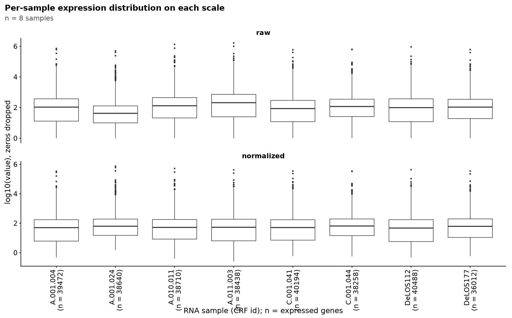
| Version | Author | Date |
|---|---|---|
| 3c2d0ad | sceriff0 | 2026-09-30 |
RNA samples are keyed in CRF space; crf2slide bridges
them to slide space. counts_data is melted long to one row
per (sample, gene), with columns Sample,
crf_id = norm_id(Sample), gene, and
expr. gene_rows expands
marker_gene_map to one row per (marker, gene) over each
marker’s gene list (comma-split, trimmed); marker_genes
keeps only the (marker, gene) rows whose gene appears in the RNA
matrix:
available genes of a marker = its genes that are also columns of `counts_data`Per marker and CRF sample, expression is the mean over that marker’s available genes:
rna_expr(<marker>, s) = (sum over the marker's available genes of expr(s, gene))
/ (number of the marker's available genes)
where:
expr(s, gene) = the DESeq2-normalised value for gene in sample sThe CRF id is then mapped to slide space with
patient_id = crf2slide[crf_id(s)], and rows with no
crosswalk match (NA) are dropped.
expr_long <- counts_data |>
mutate(crf_id = norm_id(Sample)) |>
pivot_longer(-c(Sample, crf_id), names_to = "gene", values_to = "expr")
# marker -> its genes, one row per (marker, gene). Explicit $-access + strsplit
# (no NSE) so it is robust to the base pipe / tidyr separate_rows() quirks.
gene_rows <- do.call(rbind, Map(function(m, g)
data.frame(marker = m, gene = trimws(strsplit(g, ",")[[1]]), stringsAsFactors = FALSE),
marker_gene_map$marker, marker_gene_map$genes))
missing_genes <- setdiff(gene_rows$gene, unique(expr_long$gene))
if (length(missing_genes)) message("genes absent from RNA matrix: ", paste(missing_genes, collapse = ", "))
# keep only genes present in the RNA matrix
marker_genes <- gene_rows |> filter(gene %in% unique(expr_long$gene))
# Per patient, average expression across a marker's available genes, then map the
# CRF sample id to the IHC slide id via the crosswalk.
marker_expr <- expr_long |>
inner_join(marker_genes, by = "gene", relationship = "many-to-many") |>
group_by(marker, crf_id) |>
summarise(rna_expr = mean(expr), .groups = "drop") |>
mutate(patient_id = unname(crf2slide[crf_id])) |> # crf id -> slide id
filter(!is.na(patient_id)) |>
select(marker, patient_id, rna_expr)ihc_marker_fraction(ihc_data) groups cells by
slide_key(patient_id) and, for each marker, returns the
whole-slide positive fraction (mean of is_pos over non-NA
sign values):
<marker>_posfrac(p) = (cells of p positive for <marker>) / (all cells of p)
where:
positive = marker_pos(cell, marker) — TRUE only for an explicitly positive sign.
A cell no gate evaluated for this marker (blank / "·" sign, or a marker
the panel lacks) counts in the denominator as not-positive, so a
sparsely-gated marker reads LOW rather than dropping out. Check
marker_gated() before reading a near-zero posfrac as biology.These _posfrac columns are reshaped long to
patient_id, marker, and
ihc_posfrac.
ihc_marker_frac <- ihc_marker_fraction(ihc_data) |>
select(patient_id, ends_with("_posfrac")) |>
pivot_longer(-patient_id, names_to = "marker", values_to = "ihc_posfrac") |>
mutate(marker = sub("_posfrac$", "", marker))
cat("IHC patients:", dplyr::n_distinct(ihc_marker_frac$patient_id),
"| RNA patients:", dplyr::n_distinct(marker_expr$patient_id), "\n")IHC patients: 8 | RNA patients: 8 Inner-join marker_expr and ihc_marker_frac
on marker and patient_id, keeping finite
pairs. Per marker, over its shared patients, the statistic is the
Spearman correlation between ihc_posfrac and
rna_expr across patients (paired_spearman, via
cor.test(method = "spearman")), reported with its p-value
and the pair count n; it is NA when
n < 3 or either vector is constant. Rows are sorted by
descending correlation.
rna_paired <- marker_expr |>
inner_join(ihc_marker_frac, by = c("marker", "patient_id")) |>
filter(is.finite(rna_expr), is.finite(ihc_posfrac))
cat("shared patients (RNA + IHC):",
dplyr::n_distinct(rna_paired$patient_id), "\n")shared patients (RNA + IHC): 8 rna_summary <- rna_paired |>
group_by(marker) |>
group_modify(~ paired_spearman(.x$ihc_posfrac, .x$rna_expr)) |>
ungroup() |>
arrange(desc(rho))
knitr::kable(rna_summary, digits = 3,
caption = "Spearman: IHC positive-cell fraction vs bulk-RNA expression")| marker | n | rho | p |
|---|---|---|---|
| FOXP3 | 8 | 0.857 | 0.011 |
| L1CAM | 8 | 0.833 | 0.015 |
| CD8 | 8 | 0.690 | 0.069 |
| CD163 | 8 | 0.643 | 0.096 |
| CD45 | 8 | 0.619 | 0.115 |
| CD3 | 8 | 0.595 | 0.132 |
| CD56 | 8 | 0.595 | 0.132 |
| CD4 | 8 | 0.548 | 0.171 |
| VIMENTIN | 8 | 0.452 | 0.267 |
| PDL1 | 8 | 0.381 | 0.360 |
| PD1 | 8 | 0.146 | 0.729 |
| CD74 | 8 | 0.048 | 0.935 |
| CD14 | 8 | 0.024 | 0.977 |
| GZMB | 8 | 0.012 | 0.978 |
| ARID1A | 8 | 0.000 | 1.000 |
| PANCK | 8 | -0.310 | 0.462 |
| SMA | 8 | -0.452 | 0.267 |
| FSP1 | 8 | -0.500 | 0.216 |
| P53 | 8 | -0.690 | 0.069 |
The same statistic under each scale, side by side. Spearman is
rank-based, so raw and normalized differ only
where the size factors reorder patients, and tpm only where
gene length does; a marker whose rho moves a lot between columns is one
whose ranking is being decided by the normalisation, not the
biology.
rho_by_scale <- scale_long(expr_scales) |>
inner_join(marker_genes, by = "gene", relationship = "many-to-many") |>
mutate(crf_id = norm_id(sample)) |>
group_by(scale, marker, crf_id) |>
summarise(rna_expr = mean(value), .groups = "drop") |>
mutate(patient_id = unname(crf2slide[crf_id])) |>
filter(!is.na(patient_id)) |>
inner_join(ihc_marker_frac, by = c("marker", "patient_id")) |>
filter(is.finite(rna_expr), is.finite(ihc_posfrac)) |>
group_by(scale, marker) |>
group_modify(~ paired_spearman(.x$ihc_posfrac, .x$rna_expr)) |>
ungroup() |>
select(scale, marker, rho) |>
pivot_wider(names_from = scale, values_from = rho)
knitr::kable(select(rna_summary, marker) |> left_join(rho_by_scale, by = "marker"),
digits = 3,
caption = "Spearman rho per marker under each expression scale (same order as above).")| marker | raw | normalized |
|---|---|---|
| FOXP3 | 0.810 | 0.857 |
| L1CAM | 0.714 | 0.833 |
| CD8 | 0.762 | 0.690 |
| CD163 | 0.524 | 0.643 |
| CD45 | 0.643 | 0.619 |
| CD3 | 0.690 | 0.595 |
| CD56 | 0.566 | 0.595 |
| CD4 | 0.695 | 0.548 |
| VIMENTIN | 0.405 | 0.452 |
| PDL1 | 0.310 | 0.381 |
| PD1 | 0.146 | 0.146 |
| CD74 | 0.071 | 0.048 |
| CD14 | 0.311 | 0.024 |
| GZMB | 0.084 | 0.012 |
| ARID1A | 0.262 | 0.000 |
| PANCK | -0.452 | -0.310 |
| SMA | -0.571 | -0.452 |
| FSP1 | 0.190 | -0.500 |
| P53 | -0.500 | -0.690 |
Scatter per marker: ihc_posfrac against
log1p(rna_expr) (log1p keeps zeros), with an
OLS fit line.
Split into two figures. marker_gene_map
carries 19 markers, and 19 facets on one double-column figure gives each
panel about 35mm — too small to read a fit line off. Within each figure
the panels share both axes, so a marker whose points sit far right (high
IHC fraction) or high (high expression) is visibly so. The first figure
takes the ten lineage and structural markers the panel was designed
around; the second takes the remaining nine. The split is by reading
order, not by quality: no marker is dropped, and the Spearman table
above still covers all of them together.
# The ten checked first. Ordered as listed, not alphabetically, so the facet grid
# reads down the immune lineage (CD45 -> CD3 -> CD8/CD4 -> GZMB/FOXP3 -> CD56) and
# then the structural markers (SMA, PANCK, VIMENTIN).
rna_primary_markers <- c("CD45", "CD3", "CD8", "GZMB", "FOXP3",
"CD4", "CD56", "SMA", "PANCK", "VIMENTIN")
# One scatter-by-marker figure over `markers`. Split out of the chunk body because
# both figures below are the same plot over a different marker set, and a second
# copy of it is how the two would drift apart.
plot_rna_concordance <- function(rna_paired, clin, markers, title) {
# Colour by the clinical hot/cold call so a marker whose RNA-IHC agreement holds
# only in one immune stratum is visible as such. left_join, not inner_join: a
# patient with no immuno-phenotype must stay in the plot (grey) rather than
# silently shrink the panel the fit is drawn through.
df <- rna_paired |>
filter(marker %in% markers) |>
left_join(clin, by = "patient_id") |>
mutate(immuno_phe = hotcold_order(immuno_phe),
# Keep the given order as the facet order; intersect() drops any marker
# this export did not gate rather than drawing an empty panel for it.
marker = factor(marker, levels = intersect(markers, unique(marker))))
if (nrow(df) == 0) return(invisible())
# log-scale expression (counts span orders of magnitude); +1 to keep zeros.
# The fit goes under the points and is over ALL patients, coloured or not.
ggplot(df, aes(ihc_posfrac, log1p(rna_expr))) +
geom_smooth(method = "lm", se = FALSE, colour = FIT_LINE, formula = y ~ x) +
geom_point(aes(colour = immuno_phe), alpha = 0.75, size = 1.8) +
# Panels are titled by the population counted, not by the column that carried
# it, so a strip here and a strip on the clinical page name the same thing.
# Shared x AND y. Both axes carry one unit across every panel — x is the
# positive-cell fraction on 0..1, y is log1p DESeq2-normalised counts — so free
# scales were giving each marker a private zoom level, which made every panel
# look equally well correlated and equally well expressed. The point spread is
# the evidence; it only reads as evidence on a common axis.
facet_wrap(~ marker, labeller = flowpath_labeller()) +
scale_colour_manual(values = hotcold_cols(levels(df$immuno_phe)),
na.value = "grey70", name = "Immuno-phenotype") +
labs(title = title,
subtitle = with_n("points coloured by the clinical immuno-phenotype; the fit is over all patients",
df$patient_id, "patients"),
x = "FlowPath positive-cell fraction (unitless, 0-1)",
y = "bulk RNA expression (log1p DESeq2-normalised counts)")
}if (nrow(rna_paired) > 0)
plot_rna_concordance(rna_paired, clin, rna_primary_markers,
"FlowPath marker+ fraction vs bulk-RNA expression")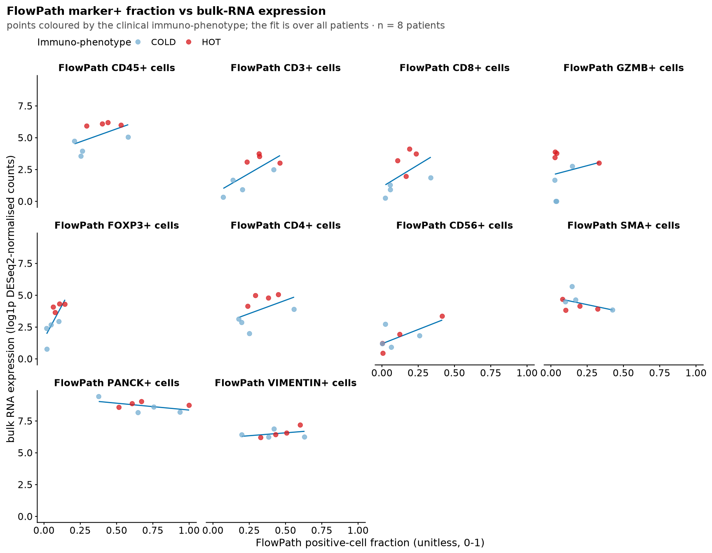
The remaining markers — everything in marker_gene_map
the figure above does not cover, in the order the map declares them:
if (nrow(rna_paired) > 0) {
rna_other_markers <- setdiff(ihc_markers, rna_primary_markers)
plot_rna_concordance(rna_paired, clin, rna_other_markers,
"FlowPath marker+ fraction vs bulk-RNA expression (remaining markers)")
}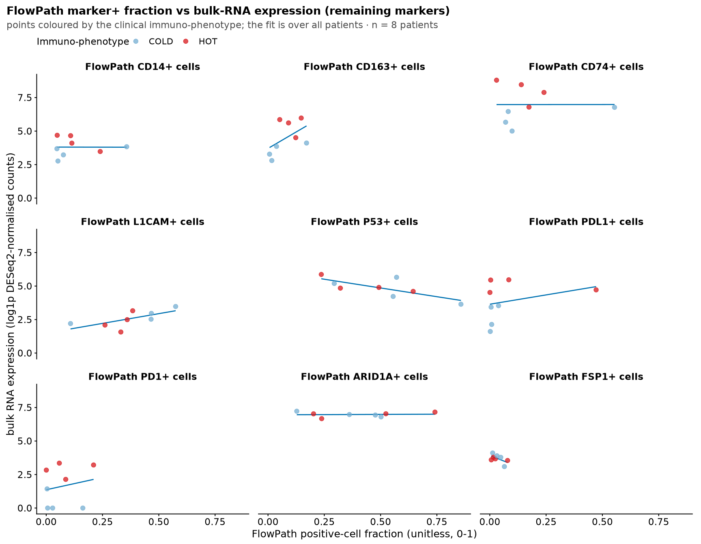
Sensitivity: replace the hard-threshold positive fraction with the per-patient mean staining intensity (mean z-score over non-NA cells):
<marker>_z(p) = (sum over p's cells with a non-NA <marker>_zscore of that zscore)
/ (cells of p with a non-NA <marker>_zscore) (ihc_marker_fraction)Then correlate <marker>_z against
rna_expr per marker with the same statistic (Spearman
correlation across patients).
ihc_z <- ihc_marker_fraction(ihc_data) |>
select(patient_id, ends_with("_z")) |>
pivot_longer(-patient_id, names_to = "marker", values_to = "ihc_z") |>
mutate(marker = sub("_z$", "", marker))
paired_z <- marker_expr |>
inner_join(ihc_z, by = c("marker", "patient_id")) |>
filter(is.finite(rna_expr), is.finite(ihc_z))
if (nrow(paired_z) > 0) {
paired_z |>
group_by(marker) |>
group_modify(~ paired_spearman(.x$ihc_z, .x$rna_expr)) |>
ungroup() |>
arrange(desc(rho)) |>
knitr::kable(digits = 3,
caption = "Spearman: IHC mean z-score vs bulk-RNA expression")
}| marker | n | rho | p |
|---|---|---|---|
| FOXP3 | 8 | 0.310 | 0.462 |
| CD163 | 8 | 0.143 | 0.752 |
| L1CAM | 8 | 0.143 | 0.752 |
| VIMENTIN | 8 | 0.095 | 0.840 |
| CD56 | 8 | 0.000 | 1.000 |
| GZMB | 8 | -0.180 | 0.670 |
| CD45 | 8 | -0.190 | 0.665 |
| P53 | 8 | -0.214 | 0.619 |
| CD8 | 8 | -0.286 | 0.501 |
| PANCK | 8 | -0.286 | 0.501 |
| CD4 | 8 | -0.333 | 0.428 |
| PDL1 | 8 | -0.333 | 0.428 |
| ARID1A | 8 | -0.405 | 0.327 |
| FSP1 | 8 | -0.476 | 0.243 |
| CD14 | 8 | -0.500 | 0.216 |
| CD74 | 8 | -0.548 | 0.171 |
| PD1 | 8 | -0.586 | 0.127 |
| CD3 | 8 | -0.619 | 0.115 |
| SMA | 8 | -0.714 | 0.058 |
Everything above compares bulk RNA against a whole-slide positive fraction — every cell in the arm’s export, no polygon consulted. But the bulk RNA was extracted from tumour material, so that comparison puts a tumour-restricted expression value against an IHC fraction diluted by whatever else is on the slide. Two independent restrictions close that gap, and they cross:
| every cell | tumour-lineage cells only | |
|---|---|---|
| whole slide | all_wholeslide (the comparison above) |
tumor_wholeslide |
| inside annotation | all_annotation |
tumor_annotation |
tumor_annotation does both and is the closest available
match to what was sequenced. The four are nested
(tumor_annotation ⊆ both of its parents ⊆
all_wholeslide), so the difference between them is not
noise: it is exactly the effect of each restriction, which is the point
of drawing them together rather than replacing the original panel.
Read the immune markers with care here. Restricting
to tumour-lineage cells makes CD8_posfrac the fraction of
tumour cells the CD8 gate calls positive, which is near zero by
construction and is a statement about gate bleed-through, not about
infiltration. The tumour-restricted columns are informative for the
structural and tumour-intrinsic markers (PANCK,
VIMENTIN, PDL1, SMA); the
annotation restriction alone is the one to read for the immune markers,
since it keeps the infiltrate.
One new input beyond those named above:
arm_cells_in_annotation(spec, ihc_data)
(code/arm_cells.R) — the arm’s cohort cells with a per-cell
in_annotation logical and an
.in_annotation_source recording which rule decided it. It
scores each cell against the same union polygon
arm_metrics(scope = "union") uses —
annotation_all/ for massimo1 and
massimo1_inverted, the dissolved region polygons for
massimo2 — so an in-annotation fraction here and a union
metrics row on the clinical page agree by construction. Where no polygon
can be read it falls back to the export’s own
Out_of_annotation flag ("flag"), and where the
arm’s spec states that an unannotated patient is annotated whole it
counts every cell ("whole_slide", massimo2
only). With neither, in_annotation is NA and
that patient leaves the restricted readouts rather than being silently
counted whole.tumour cell = cell_lineage(phenotype_clean) == "Tumor"
(PANCK+Tumor / VIM+Tumor under either tool's spelling; NEVER a string
match on the label — the two phenotypers spell the taxonomy
differently. cell_tables.R)
all_wholeslide(p) = all cells of p
all_annotation(p) = cells of p with in_annotation TRUE
tumor_wholeslide(p) = tumour cells of p
tumor_annotation(p) = tumour cells of p with in_annotation TRUEEach of the four cell sets is then put through the
same ihc_marker_fraction() used above, so
only the denominator changes:
<marker>_posfrac(p, D) = (cells of D(p) positive for <marker>) / (all cells of D(p))# Per-cell membership, computed ONCE and re-cut four ways. Recomputing it per
# denominator would run point-in-polygon four times over the same cells and, worse,
# would let the four denominators drift apart if one call ever picked a different
# polygon tier.
ihc_scoped <- arm_cells_in_annotation(arm_spec(ARM), ihc_data)
# The tumour flag goes through cell_lineage(), never a string test on the label:
# FlowPath writes "PANCK+Tumor" and mirage "PANCK_Tumor" for the same population,
# and a grepl("Tumor") would also sweep in anything a future panel names that way.
ihc_scoped <- ihc_scoped |>
mutate(.is_tumor = cell_lineage(cell_phenotype(ihc_scoped)) %in% "Tumor")
# The four cell sets, as a named list so the loop below cannot fall out of step with
# the palette: the names ARE the DENOM_COLS levels (plot_theme.R).
denom_sets <- list(
all_wholeslide = ihc_scoped,
all_annotation = filter(ihc_scoped, in_annotation %in% TRUE),
tumor_wholeslide = filter(ihc_scoped, .is_tumor),
tumor_annotation = filter(ihc_scoped, .is_tumor, in_annotation %in% TRUE))
knitr::kable(arm_in_annotation_inventory(ihc_scoped),
caption = paste0("Cells behind each denominator, per patient (arm `",
ARM, "`). `membership` names the rule that decided ",
"in_annotation: sf = the union polygon, flag = the ",
"export's Out_of_annotation column, whole_slide = the ",
"arm's stated convention for an unannotated patient."))| patient_id | membership | n_cells | n_in_annotation | n_tumor | n_tumor_in_annotation | pct_in_annotation |
|---|---|---|---|---|---|---|
| 046 | sf | 405697 | 322187 | 187180 | 153414 | 79.4 |
| 052 | sf | 378194 | 287089 | 162227 | 120242 | 75.9 |
| 10338 | sf | 235328 | 118741 | 143052 | 79921 | 50.5 |
| 15370 | flag | 79603 | 9308 | 20289 | 6186 | 11.7 |
| 15897 | sf | 202652 | 189459 | 115620 | 112229 | 93.5 |
| 24086 | whole_slide | 283631 | 283631 | 189003 | 189003 | 100.0 |
| 366722 | flag | 241921 | 52803 | 80513 | 27407 | 21.8 |
| 5456 | sf | 382799 | 259456 | 154547 | 103620 | 67.8 |
The same statistic as above — Spearman correlation across patients
between ihc_posfrac and rna_expr, via
paired_spearman — computed once per (marker, denominator).
rho is reported per denominator with the shared pair count
n; n can differ between denominators because a
patient with no tumour cells at all drops out of the tumour-restricted
columns.
rna_paired_denom <- purrr::imap_dfr(denom_sets, function(cells_d, denom) {
if (nrow(cells_d) == 0) return(tibble::tibble())
ihc_marker_fraction(cells_d) |>
select(patient_id, ends_with("_posfrac")) |>
pivot_longer(-patient_id, names_to = "marker", values_to = "ihc_posfrac") |>
mutate(marker = sub("_posfrac$", "", marker), denominator = denom)
}) |>
inner_join(marker_expr, by = c("marker", "patient_id")) |>
filter(is.finite(rna_expr), is.finite(ihc_posfrac)) |>
mutate(denominator = denom_factor(denominator))
denom_summary <- rna_paired_denom |>
group_by(marker, denominator) |>
group_modify(~ paired_spearman(.x$ihc_posfrac, .x$rna_expr)) |>
ungroup()
# ONE marker ordering, best whole-slide correlation first, shared by the table and
# the figure below. Sorting the WIDE table on a `rho_all_wholeslide` column instead
# would tie both to a column pivot_wider only creates when that level is observed —
# and the sort silently decides what a reader compares against. `union` appends any
# marker with no whole-slide row rather than dropping it.
marker_order <- denom_summary |>
filter(denominator == "all_wholeslide", is.finite(rho)) |>
arrange(desc(rho)) |>
pull(marker) |>
as.character() |>
union(sort(unique(as.character(denom_summary$marker))))
denom_summary |>
select(marker, denominator, rho, n) |>
mutate(marker = factor(marker, levels = marker_order)) |>
arrange(marker) |>
pivot_wider(names_from = denominator, values_from = c(rho, n)) |>
knitr::kable(digits = 3,
caption = paste0("Spearman: IHC positive-cell fraction vs bulk-RNA ",
"expression, under each denominator. Sorted by the ",
"whole-slide value, so a marker the restrictions ",
"move is read across its row."))| marker | rho_all_wholeslide | rho_all_annotation | rho_tumor_wholeslide | rho_tumor_annotation | n_all_wholeslide | n_all_annotation | n_tumor_wholeslide | n_tumor_annotation |
|---|---|---|---|---|---|---|---|---|
| FOXP3 | 0.857 | 0.881 | 0.976 | 0.929 | 8 | 8 | 8 | 8 |
| L1CAM | 0.833 | 0.571 | 0.762 | 0.595 | 8 | 8 | 8 | 8 |
| CD8 | 0.690 | 0.929 | 0.786 | 0.857 | 8 | 8 | 8 | 8 |
| CD163 | 0.643 | 0.738 | 0.905 | 0.738 | 8 | 8 | 8 | 8 |
| CD45 | 0.619 | 0.786 | NA | NA | 8 | 8 | 8 | 8 |
| CD3 | 0.595 | 0.833 | 0.286 | 0.595 | 8 | 8 | 8 | 8 |
| CD56 | 0.595 | 0.595 | 0.500 | 0.595 | 8 | 8 | 8 | 8 |
| CD4 | 0.548 | 0.619 | 0.262 | 0.286 | 8 | 8 | 8 | 8 |
| VIMENTIN | 0.452 | 0.500 | 0.833 | 0.762 | 8 | 8 | 8 | 8 |
| PDL1 | 0.381 | 0.381 | 0.476 | 0.548 | 8 | 8 | 8 | 8 |
| PD1 | 0.146 | 0.146 | -0.024 | -0.024 | 8 | 8 | 8 | 8 |
| CD74 | 0.048 | 0.167 | 0.405 | 0.524 | 8 | 8 | 8 | 8 |
| CD14 | 0.024 | 0.167 | -0.071 | 0.333 | 8 | 8 | 8 | 8 |
| GZMB | 0.012 | 0.012 | 0.132 | 0.228 | 8 | 8 | 8 | 8 |
| ARID1A | 0.000 | 0.143 | -0.048 | 0.214 | 8 | 8 | 8 | 8 |
| PANCK | -0.310 | 0.048 | 0.071 | 0.095 | 8 | 8 | 8 | 8 |
| SMA | -0.452 | 0.167 | NA | NA | 8 | 8 | 8 | 8 |
| FSP1 | -0.500 | 0.429 | -0.167 | 0.405 | 8 | 8 | 8 | 8 |
| P53 | -0.690 | -0.286 | -0.333 | -0.357 | 8 | 8 | 8 | 8 |
Each marker as one row, its four correlations as four points. A
marker whose points sit apart is one the denominator decides; a marker
whose four points stack is one where the restriction changes nothing,
which is itself the result. The dashed line is rho = 0.
if (nrow(denom_summary) > 0) {
# `marker_order` (previous chunk) is best-first; a discrete y axis draws its first
# level at the BOTTOM, so it is reversed here to put the best marker at the top.
# The table and this figure therefore rank markers identically.
df <- denom_summary |>
filter(is.finite(rho)) |>
mutate(marker = factor(marker, levels = rev(marker_order)))
# The tie-line is a RANGE, not a geom_line: every point in a marker's group shares
# its y, so a line would connect them in whatever order the rows happen to sit in
# and could double back on itself. min..max is the only thing the row means.
spans <- df |> group_by(marker) |> summarise(lo = min(rho), hi = max(rho), .groups = "drop")
ggplot(df, aes(rho, marker, colour = denominator)) +
geom_vline(xintercept = 0, linetype = "dashed", colour = "grey60") +
# Under the points: it ties one marker's four values together so the eye reads
# the row as one marker rather than four scattered dots.
geom_linerange(data = spans, aes(xmin = lo, xmax = hi, y = marker),
inherit.aes = FALSE, colour = "grey80") +
geom_point(size = 2, alpha = 0.9) +
scale_colour_denominator(name = "IHC denominator") +
# NAMED palette, not scale_colour_manual(oi): a marker missing one denominator
# would otherwise shift the remaining three onto each other's colours.
labs(title = "Does restricting the IHC denominator improve RNA concordance?",
subtitle = with_n(paste0("arm `", ARM,
"`; bulk RNA is extracted from tumour material, so the ",
"restricted denominators are the closer comparison"),
rna_paired_denom$patient_id, "patients"),
x = "Spearman rho (IHC positive fraction vs bulk-RNA expression)",
y = NULL)
}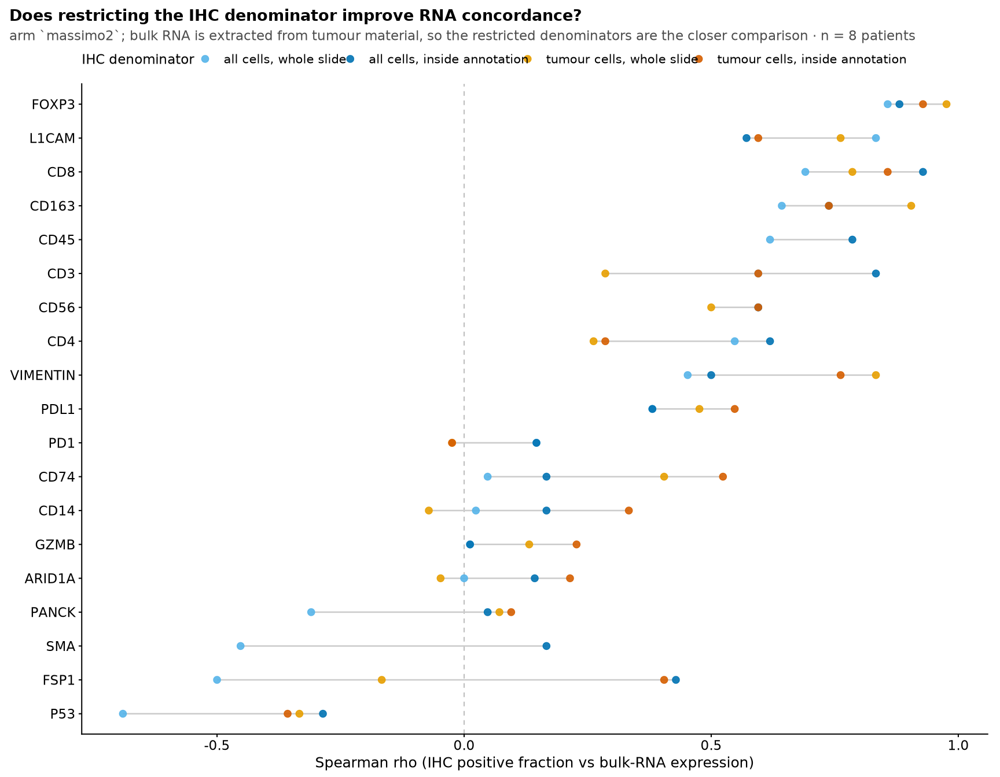
| Version | Author | Date |
|---|---|---|
| ca05f70 | sceriff0 | 2026-09-07 |
The scatter for tumor_annotation — the denominator that
matches the sequenced material most closely — drawn exactly as the
whole-slide figures above, so the two are read side by side:
tumor_ann_paired <- filter(rna_paired_denom, denominator == "tumor_annotation")
if (nrow(tumor_ann_paired) > 0)
plot_rna_concordance(tumor_ann_paired, clin, rna_primary_markers,
"Tumour cells inside the annotation: marker+ fraction vs bulk-RNA expression")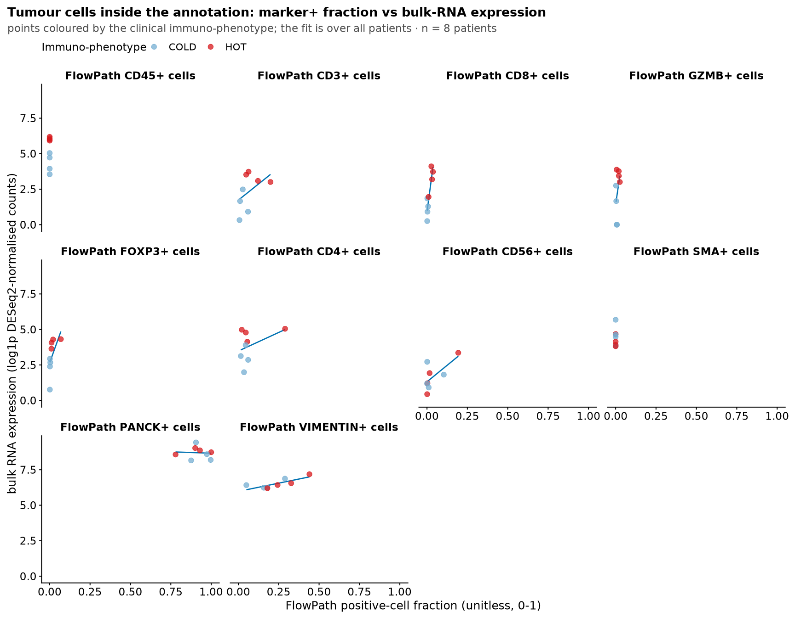
| Version | Author | Date |
|---|---|---|
| ca05f70 | sceriff0 | 2026-09-07 |
if (nrow(tumor_ann_paired) > 0)
plot_rna_concordance(tumor_ann_paired, clin, setdiff(ihc_markers, rna_primary_markers),
"Tumour cells inside the annotation: remaining markers")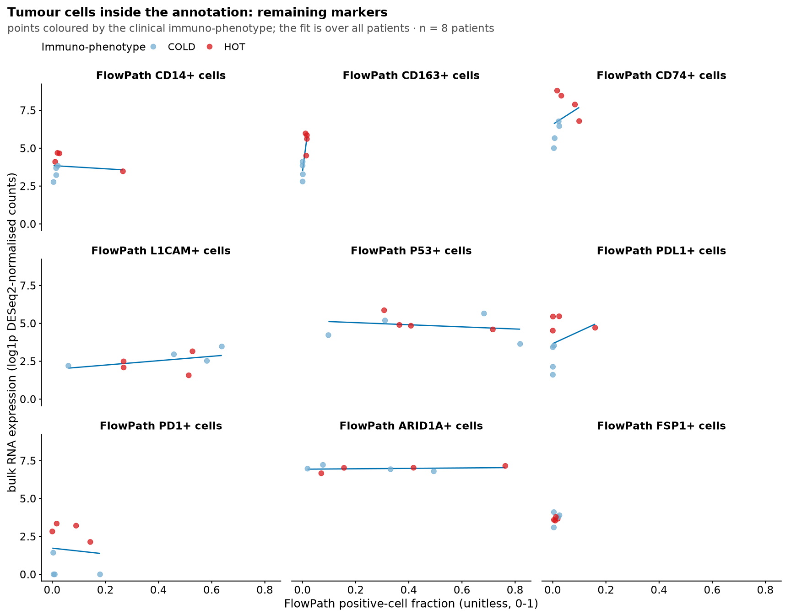
| Version | Author | Date |
|---|---|---|
| ca05f70 | sceriff0 | 2026-09-07 |
na.rm = TRUE:
<marker>_posfrac and <marker>_z
average over the non-NA sign / z-score cells of a patient, so the
effective denominator is that count, not necessarily all of the
patient’s cells.rna_expr averages only genes actually present in
counts_data (a marker’s available genes); genes in a
marker’s list that are absent from the matrix are reported by the
missing_genes message and excluded from the mean. A marker
with no available genes contributes no RNA row.relationship = "many-to-many", but
each (sample, gene) has a single expr, so the per-(marker,
sample) mean is over distinct genes.PANCK averages EPCAM + keratins;
SMA -> ACTA2, CD56 ->
NCAM1, PDL1 -> CD274,
PD1 -> PDCD1, FSP1 ->
S100A4. wrongL1CAM is excluded by construction
(not in marker_gene_map).n.The same question one level up: instead of a marker, a whole cell
type. immunedeconv estimates cell-type abundance from the
same bulk matrix; the IHC panel counts those cells directly. Restricted
to the four lineages both sides can name (CD8T, CD4T, Treg, NK), and
coloured by the same hot/cold call as part 1.
Every value below is derived from two inputs, bridged by the clinical table:
ihc_data — FlowPath single cells deduplicated to
one copy per patient (whole slide, no annotation
boundary). Each cell carries a lineage =
phenotype_clean collapsed via the
phenotype_lineage table.expr_scales — the bulk RNA on its three scales (part 1,
The three expression scales); the deconvolution reads TPM when
it exists, else the DESeq2-normalised scale.crf2slide and clin — the id bridge and the
hot/cold call, both built once in Shared keys above and
only read here.Comparison is anchored to the four comparable lineages CD8T, CD4T,
Treg, NK (comparable_lineages) — the only IHC phenotype
lineages with a clean deconvolution counterpart.
deconv_to_lineage() maps each method’s cell-type string to
one of these (case-insensitive pattern match:
regulatory|treg -> Treg, cd8 -> CD8T,
cd4 -> CD4T, ^nk|nk cell|natural killer
-> NK), everything else to NA. All correlations are
Spearman correlation via paired_spearman (rank-based;
NA when fewer than 3 shared patients or either vector is
constant).
expr_mat is gene by sample, cast double, gene symbols as
row names, on the TPM scale when gene lengths were found and on the
DESeq2-normalised scale otherwise. EXPR_SCALE records
which; set it by hand to force one. This is the one place the scale is
not cosmetic: quanTIseq, EPIC and CIBERSORT were fit on TPM, and the
length correction changes a long gene’s share of a sample. MCP-counter
and xCell rank genes within a sample and are indifferent to it.
EXPR_SCALE <- if (!is.null(expr_scales$tpm)) "tpm" else "normalized"
expr_mat <- expr_scales[[EXPR_SCALE]]
storage.mode(expr_mat) <- "double"
cat("expression matrix:", nrow(expr_mat), "genes x", ncol(expr_mat), "samples",
"| scale:", EXPR_SCALE, "| gene lengths from:", expr_scales$length_source, "\n")expression matrix: 29744 genes x 8 samples | scale: normalized | gene lengths from: none When
EXPR_SCALEisnormalized, no gene lengths were found: absolute fractions from the TPM-trained methods are then approximate, though the cross-patient ranking (what the Spearman validation uses) is robust to this. To switch to TPM, writedata/gene_lengths.tsv(columnsgene,lengthin bp, from the GTF the counts were made against) besidecounts.RDataand re-knit; nothing else changes.
Each method is gated by the inputs it needs, not preference:
methods_free (quanTIseq, EPIC, MCPcounter, xCell, ABIS)
— run on expr_mat alone. Always enabled.methods_indication (TIMER, ConsensusTME) — need one
cancer-type code per sample (INDICATIONS, length =
ncol(expr_mat)). Enabled iff INDICATIONS is
non-NULL; here it is NULL, so both are
skipped.CIBERSORT.R + LM22.txt, paths from env vars
CIBERSORT_BINARY / CIBERSORT_MAT. Run iff both
are set and the files exist.# First-generation methods that run on the bulk matrix with no extra artifacts.
methods_free <- c("quantiseq", "epic", "mcp_counter", "xcell", "abis")
# TIMER / ConsensusTME need one cancer-type code per SAMPLE (length == ncol(expr_mat),
# same order). Set INDICATIONS to enable them, e.g. rep("READ", ncol(expr_mat)) for a
# single-indication cohort, or a per-sample vector. NULL -> both skipped.
INDICATIONS <- NULL
methods_indication <- if (!is.null(INDICATIONS)) c("timer", "consensus_tme") else character(0)
# CIBERSORT is license-gated: register at cibersort.stanford.edu, download CIBERSORT.R
# and LM22.txt, and point these at them (env vars keep the paths out of the repo).
# Absent -> CIBERSORT and CIBERSORT (abs.) are skipped.
CIBERSORT_BINARY <- Sys.getenv("CIBERSORT_BINARY", unset = NA) # path to CIBERSORT.R
CIBERSORT_MAT <- Sys.getenv("CIBERSORT_MAT", unset = NA) # path to LM22.txtEach enabled method produces a cell-type by sample score table, pivoted long to rows of (cell_type, sample, score, method). Then each row is keyed into slide space:
crf_id = norm_id(sample)
patient_id = crf2slide[crf_id] (slide space)
lineage = deconv_to_lineage(cell_type)Rows with no slide crosswalk (patient_id is
NA) are dropped.
deconv_long <- NULL
deconv_status <- NULL
if (requireNamespace("immunedeconv", quietly = TRUE)) {
# Run one method, CAPTURING success/failure + a note (why it failed, or how many
# cell types it returned). possibly()'s messages are hidden by message=FALSE, so
# failures were previously invisible — this makes "only 3 methods ran" diagnosable.
run_method <- function(m) {
tryCatch({
args <- list(gene_expression = expr_mat, method = m)
if (m %in% c("timer", "consensus_tme")) args$indications <- INDICATIONS
res <- do.call(immunedeconv::deconvolute, args) |>
pivot_longer(-cell_type, names_to = "sample", values_to = "score") |>
mutate(method = m)
list(method = m, ok = TRUE, data = res,
note = sprintf("%d cell types", dplyr::n_distinct(res$cell_type)))
}, error = function(e) list(method = m, ok = FALSE, data = NULL,
note = conditionMessage(e)))
}
methods_run <- c(methods_free, methods_indication)
# CIBERSORT (+ abs): only when the license-gated files are configured & present.
if (!is.na(CIBERSORT_BINARY) && !is.na(CIBERSORT_MAT) &&
file.exists(CIBERSORT_BINARY) && file.exists(CIBERSORT_MAT)) {
immunedeconv::set_cibersort_binary(CIBERSORT_BINARY)
immunedeconv::set_cibersort_mat(CIBERSORT_MAT)
methods_run <- c(methods_run, "cibersort", "cibersort_abs")
}
runs <- purrr::map(methods_run, run_method)
deconv_status <- purrr::map_dfr(runs, function(r)
tibble::tibble(method = r$method,
status = if (r$ok) "ok" else "FAILED",
detail = r$note))
ok_data <- runs |> purrr::keep(~ .x$ok) |> purrr::map("data")
if (length(ok_data)) {
deconv_long <- bind_rows(ok_data) |>
mutate(crf_id = norm_id(sample),
patient_id = unname(crf2slide[crf_id]), # crf id -> slide id
lineage = deconv_to_lineage(cell_type))
n_unmapped <- dplyr::n_distinct(deconv_long$crf_id[is.na(deconv_long$patient_id)])
deconv_long <- deconv_long |> filter(!is.na(patient_id))
} else {
n_unmapped <- 0L
}
cat("methods:", sum(deconv_status$status == "ok"), "ok of",
nrow(deconv_status), "attempted [",
paste(sort(unique(deconv_long$method)), collapse = ", "), "]",
"| deconvolution rows:", if (is.null(deconv_long)) 0L else nrow(deconv_long),
"|", n_unmapped, "RNA sample(s) had no slide crosswalk\n")
} else {
# cat(), not message(): message=FALSE on this page swallows a message, and the
# rendered report then shows a chunk with no output — which is exactly how the
# deconvolution section (and Figure 5c downstream) went missing without anyone
# noticing. A visible line names the fix.
cat("**immunedeconv not installed — deconvolution skipped, and",
"`output/paired_deconv.rds` not written (Figure 5c depends on it).**",
"Install it with `remotes::install_github(\"omnideconv/immunedeconv\")`",
"and re-knit.\n")
}methods: 3 ok of 5 attempted [ abis, mcp_counter, quantiseq ] | deconvolution rows: 312 | 0 RNA sample(s) had no slide crosswalkCIBERSORTx is CIBERSORT’s successor and ships only as a Docker /
Singularity image, so immunedeconv cannot call it. The page
hands it the SAME expr_mat (written to
data/cibersortx/input/mixture.txt, GeneSymbol
first, one column per sample, unquoted) and, on the next knit, reads
what code/cibersortx_fractions.sh left under
data/cibersortx/output/: the B-mode-corrected
*_Adjusted.txt when present, else
*_Results.txt, with the per-sample P-value /
Correlation / RMSE columns dropped. Rows go
through the same norm_id -> crf2slide ->
deconv_to_lineage pipeline as every other method (LM22’s
three T cells CD4 * subsets sum into CD4T, the two
NK cells * into NK, regulatory (Tregs) into
Treg; follicular helper and gamma delta map to nothing) and are appended
to deconv_long as method cibersortx, with a
row in the status table. No output yet: the status row says so and
nothing else changes.
cbx_in <- here("data", "cibersortx", "input", "mixture.txt")
cbx_out <- here("data", "cibersortx", "output")
write_cibersortx_mixture(expr_mat, cbx_in)
cbx <- read_cibersortx_results(cbx_out)
if (nrow(cbx)) {
cbx <- cbx |>
mutate(crf_id = norm_id(sample),
patient_id = unname(crf2slide[crf_id]),
lineage = deconv_to_lineage(cell_type)) |>
filter(!is.na(patient_id))
deconv_long <- bind_rows(deconv_long, select(cbx, -source_file))
deconv_status <- bind_rows(deconv_status, tibble::tibble(
method = "cibersortx", status = "ok",
detail = sprintf("%d cell types from %s", dplyr::n_distinct(cbx$cell_type),
cbx$source_file[1])))
cat("cibersortx:", nrow(cbx), "rows read from", cbx$source_file[1], "\n")
} else {
deconv_status <- bind_rows(deconv_status, tibble::tibble(
method = "cibersortx", status = "not run",
detail = paste("no *_Results.txt under data/cibersortx/output/; the mixture is",
"at data/cibersortx/input/mixture.txt — run",
"code/cibersortx_fractions.sh and re-knit")))
cat("cibersortx: no output yet; mixture exported to", cbx_in, "\n")
}cibersortx: 132 rows read from CIBERSORTx_Adjusted.txt | method | status | detail |
|---|---|---|
| quantiseq | ok | 11 cell types |
| epic | FAILED | no item called “package:EPIC” on the search list |
| mcp_counter | ok | 11 cell types |
| xcell | FAILED | object ‘xCell.data’ not found |
| abis | ok | 17 cell types |
| cibersortx | ok | 22 cell types from CIBERSORTx_Adjusted.txt |
deconv_to_lineage() is a pattern match on the label, not
a per-method table, so the only way to audit it is to print what each
method actually emitted next to the lineage it was assigned. One row per
(method, cell type); (unmapped) means the label matched no
rule and the cell type is dropped before the comparison. Read down each
method for a label that was pulled into a lineage it does not belong to,
or one that should have mapped and did not. The same table is written to
output/deconv_celltype_map.csv.
if (!is.null(deconv_long) && nrow(deconv_long) > 0) {
celltype_map <- deconv_long |>
distinct(method, cell_type, lineage) |>
mutate(lineage = tidyr::replace_na(lineage, "(unmapped)"),
lineage = factor(lineage, levels = c(comparable_lineages, "(unmapped)"))) |>
arrange(method, lineage, cell_type)
dir.create(here("output"), showWarnings = FALSE, recursive = TRUE)
readr::write_csv(celltype_map, here("output", "deconv_celltype_map.csv"))
cat("cell types:", nrow(celltype_map), "across", dplyr::n_distinct(celltype_map$method),
"methods;", sum(celltype_map$lineage != "(unmapped)"), "mapped to a lineage\n")
knitr::kable(celltype_map,
caption = "Every deconvolution cell type, by method, and the lineage deconv_to_lineage() assigned it.")
} else {
cat("_No deconvolution rows yet, so nothing to map._\n")
}cell types: 61 across 4 methods; 18 mapped to a lineage| method | cell_type | lineage |
|---|---|---|
| abis | T cell CD8+ memory | CD8T |
| abis | T cell CD8+ naive | CD8T |
| abis | T cell CD4+ memory | CD4T |
| abis | T cell CD4+ naive | CD4T |
| abis | NK cell | NK |
| abis | B cell memory | (unmapped) |
| abis | B cell naive | (unmapped) |
| abis | B cell plasma immature | (unmapped) |
| abis | Basophil | (unmapped) |
| abis | Monocyte conventional | (unmapped) |
| abis | Monocyte non-conventional | (unmapped) |
| abis | Myeloid dendritic cell | (unmapped) |
| abis | Neutrophil | (unmapped) |
| abis | Plasmacytoid dendritic cell | (unmapped) |
| abis | T cell MAIT | (unmapped) |
| abis | T cell gamma delta VD2 | (unmapped) |
| abis | T cell gamma delta non-VD2 | (unmapped) |
| cibersortx | T cells CD8 | CD8T |
| cibersortx | T cells CD4 memory activated | CD4T |
| cibersortx | T cells CD4 memory resting | CD4T |
| cibersortx | T cells CD4 naive | CD4T |
| cibersortx | T cells regulatory (Tregs) | Treg |
| cibersortx | NK cells activated | NK |
| cibersortx | NK cells resting | NK |
| cibersortx | B cells memory | (unmapped) |
| cibersortx | B cells naive | (unmapped) |
| cibersortx | Dendritic cells activated | (unmapped) |
| cibersortx | Dendritic cells resting | (unmapped) |
| cibersortx | Eosinophils | (unmapped) |
| cibersortx | Macrophages M0 | (unmapped) |
| cibersortx | Macrophages M1 | (unmapped) |
| cibersortx | Macrophages M2 | (unmapped) |
| cibersortx | Mast cells activated | (unmapped) |
| cibersortx | Mast cells resting | (unmapped) |
| cibersortx | Monocytes | (unmapped) |
| cibersortx | Neutrophils | (unmapped) |
| cibersortx | Plasma cells | (unmapped) |
| cibersortx | T cells follicular helper | (unmapped) |
| cibersortx | T cells gamma delta | (unmapped) |
| mcp_counter | T cell CD8+ | CD8T |
| mcp_counter | NK cell | NK |
| mcp_counter | B cell | (unmapped) |
| mcp_counter | Cancer associated fibroblast | (unmapped) |
| mcp_counter | Endothelial cell | (unmapped) |
| mcp_counter | Macrophage/Monocyte | (unmapped) |
| mcp_counter | Monocyte | (unmapped) |
| mcp_counter | Myeloid dendritic cell | (unmapped) |
| mcp_counter | Neutrophil | (unmapped) |
| mcp_counter | T cell | (unmapped) |
| mcp_counter | cytotoxicity score | (unmapped) |
| quantiseq | T cell CD8+ | CD8T |
| quantiseq | T cell CD4+ (non-regulatory) | CD4T |
| quantiseq | T cell regulatory (Tregs) | Treg |
| quantiseq | NK cell | NK |
| quantiseq | B cell | (unmapped) |
| quantiseq | Macrophage M1 | (unmapped) |
| quantiseq | Macrophage M2 | (unmapped) |
| quantiseq | Monocyte | (unmapped) |
| quantiseq | Myeloid dendritic cell | (unmapped) |
| quantiseq | Neutrophil | (unmapped) |
| quantiseq | uncharacterized cell | (unmapped) |
ihc_lineage_fraction(ihc_data) counts cells per patient
and lineage and normalises by the patient’s total cell count (over
all lineages, NA included), giving the
whole-slide fraction:
ihc_frac(patient, lineage) = (cells of patient with that lineage) / (all cells of patient)
where: the denominator is ALL cells of the patient (every lineage, NA included),
before restricting to the four comparable lineages.Restricted to the four comparable lineages, then completed to
0 across the full patient-by-lineage grid: a lineage a patient
simply lacks reads as 0 (present), not a missing row — otherwise the
inner_join below would silently drop that patient from that
lineage’s panel.
lin_raw <- ihc_lineage_fraction(ihc_data) |>
filter(lineage %in% comparable_lineages) |>
select(patient_id, lineage, ihc_frac = frac)
# Complete the patient x lineage grid: a lineage a patient simply lacks must read
# as 0 (present), not a missing row. Otherwise the inner_join below silently drops
# that patient from that lineage's panel — the "plot never shows all patients" bug.
ihc_lin <- expand.grid(patient_id = unique(slide_key(ihc_data$patient_id)),
lineage = comparable_lineages,
stringsAsFactors = FALSE) |>
left_join(lin_raw, by = c("patient_id", "lineage")) |>
mutate(ihc_frac = ifelse(is.na(ihc_frac), 0, ihc_frac))
cat("IHC patients with lineage fractions:", dplyr::n_distinct(ihc_lin$patient_id), "\n")IHC patients with lineage fractions: 8 Per method, patient and lineage, the score sums a method’s sub-types mapping to the same lineage (e.g. two NK sub-types):
score(method, patient, lineage) = sum of that method's sub-type scores mapping to the lineage
where: the sub-types are the method's rows for that patient whose
deconv_to_lineage(cell_type) equals the lineage.This is inner-joined to ihc_frac(patient, lineage) on
patient and lineage, keeping finite pairs.
deconv_paired <- NULL
if (!is.null(deconv_long) && nrow(deconv_long) > 0) {
deconv_lin <- deconv_long |>
filter(!is.na(lineage)) |>
group_by(method, patient_id, lineage) |>
summarise(score = sum(score), .groups = "drop")
deconv_paired <- deconv_lin |>
inner_join(ihc_lin, by = c("patient_id", "lineage")) |>
filter(is.finite(score), is.finite(ihc_frac))
cat("deconv_paired (method x lineage x patient) rows:", nrow(deconv_paired), "\n")
}deconv_paired (method x lineage x patient) rows: 96 Per method and lineage, concordance is the cross-patient Spearman correlation between the method’s score and the IHC fraction; method ranking averages those across lineages:
concordance(method, lineage) = Spearman correlation between score and ihc_frac across patients
method ranking(method) = average of those Spearman values across lineages (na.rm)
where: n_lineages = the number of lineages with a finite Spearman value.if (!is.null(deconv_paired) && nrow(deconv_paired) > 0) {
deconv_summary <- deconv_paired |>
group_by(method, lineage) |>
group_modify(~ paired_spearman(.x$score, .x$ihc_frac)) |>
ungroup() |>
arrange(lineage, desc(rho))
knitr::kable(deconv_summary, digits = 3,
caption = "Spearman IHC vs deconvolution, per method and lineage")
# Which method agrees best overall (mean rho across lineages).
method_rank <- deconv_summary |>
group_by(method) |>
summarise(mean_rho = mean(rho, na.rm = TRUE),
n_lineages = sum(is.finite(rho)), .groups = "drop") |>
arrange(desc(mean_rho))
knitr::kable(method_rank, digits = 3,
caption = "Method ranking by mean Spearman across lineages")
}| method | mean_rho | n_lineages |
|---|---|---|
| mcp_counter | 0.345 | 2 |
| abis | 0.071 | 3 |
| cibersortx | 0.042 | 4 |
| quantiseq | -0.120 | 4 |
Scatter of ihc_frac (x) vs score (y),
one figure per method, panels by lineage, in the
ranking’s order so the best-agreeing method comes first. Within a figure
the four panels share both axes: x is the IHC fraction on 0..1 and y is
that method’s score, so the spread across lineages reads on one scale.
Between figures y is free by construction, because deconvolution scores
are not on a common scale from one method to the next. Each strip
carries that lineage’s Spearman rho from the table above, so the picture
and the number sit together.
if (!is.null(deconv_paired) && nrow(deconv_paired) > 0) {
# Same hot/cold colouring as the marker panel above, on the same `clin` lookup:
# a method that tracks IHC only in hot tumours shows up here as a colour-split
# cloud rather than as a middling overall rho. left_join: a patient with no
# immuno-phenotype stays in the plot (grey) rather than shrinking the fit.
df <- deconv_paired |>
left_join(clin, by = "patient_id") |>
mutate(immuno_phe = hotcold_order(immuno_phe),
lineage = factor(lineage, levels = comparable_lineages))
plot_deconv_method <- function(m) {
d <- filter(df, method == m)
rho <- filter(deconv_summary, method == m)
lab <- stats::setNames(
sprintf("%s (rho = %s)", rho$lineage,
ifelse(is.finite(rho$rho), formatC(rho$rho, format = "f", digits = 2), "NA")),
as.character(rho$lineage))
ggplot(d, aes(ihc_frac, score)) +
geom_smooth(method = "lm", se = FALSE, colour = FIT_LINE, formula = y ~ x) +
geom_point(aes(colour = immuno_phe), alpha = 0.75, size = 1.8) +
# Shared x AND y within the method: the same IHC value lands in the same place
# in every panel, and the lineages' scores are compared on the method's own scale.
facet_wrap(~ lineage, nrow = 1,
labeller = as_labeller(function(x) ifelse(x %in% names(lab), lab[x], x))) +
scale_colour_manual(values = hotcold_cols(levels(d$immuno_phe)),
na.value = "grey70", name = "Immuno-phenotype") +
# Three x ticks and a wider gutter: with four panels in a row, the default
# 0.00 / 1.00 labels of neighbouring panels ran into each other.
scale_x_continuous(breaks = c(0, 0.5, 1), limits = c(0, 1)) +
theme(panel.spacing.x = unit(1.2, "lines")) +
labs(title = paste0(method_label(m), ": IHC lineage fraction vs deconvolution score"),
subtitle = with_n(paste("points coloured by the clinical immuno-phenotype;",
"the fit is over all patients; axes shared across the panels"),
d$patient_id, "patients"),
x = "IHC fraction of all cells (unitless, 0-1)",
y = paste(method_label(m), "score (unitless)"))
}
for (m in method_rank$method) print(plot_deconv_method(m))
}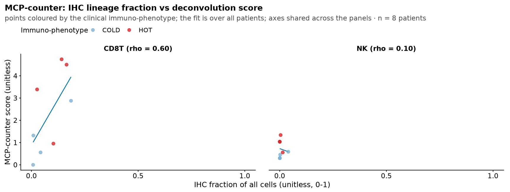
| Version | Author | Date |
|---|---|---|
| 3c2d0ad | sceriff0 | 2026-09-30 |
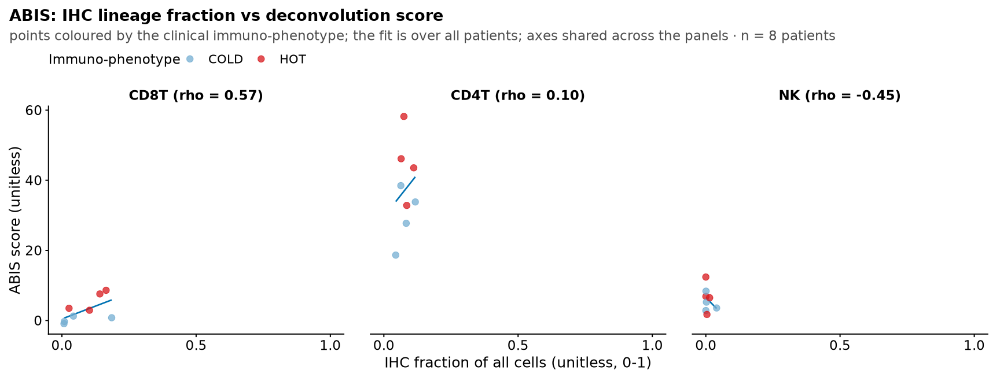
| Version | Author | Date |
|---|---|---|
| 3c2d0ad | sceriff0 | 2026-09-30 |
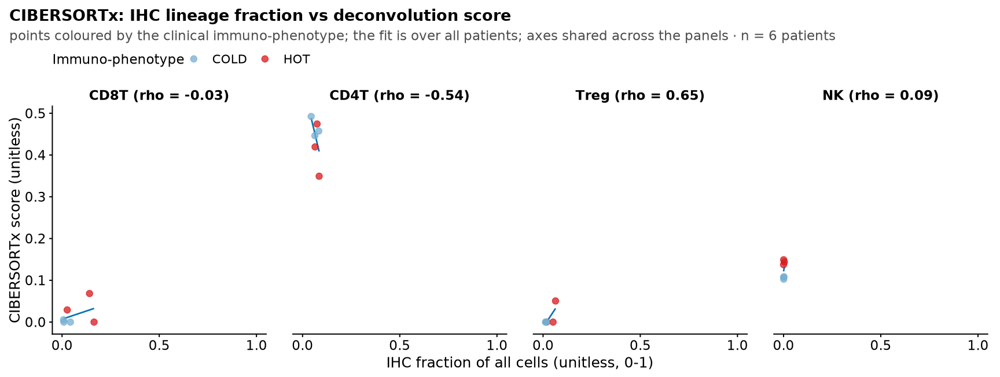
| Version | Author | Date |
|---|---|---|
| 3c2d0ad | sceriff0 | 2026-09-30 |
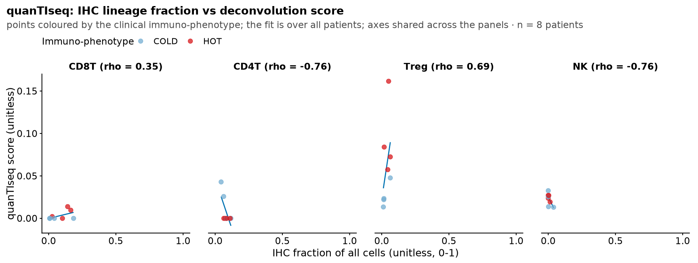
| Version | Author | Date |
|---|---|---|
| 3c2d0ad | sceriff0 | 2026-09-30 |
Treat IHC as one more “source” alongside each method, giving one
value per source, patient and lineage: the per-lineage deconvolution
score for a method, or ihc_frac for source
IHC.
agr <- NULL
if (!is.null(deconv_long) && nrow(deconv_long) > 0) {
# per (method, patient, lineage) score, summing a method's split sub-types.
deconv_lin <- deconv_long |>
filter(!is.na(lineage)) |>
group_by(method, patient_id, lineage) |>
summarise(score = sum(score), .groups = "drop")
agree_src <- bind_rows(
deconv_lin |> transmute(source = method, patient_id, lineage, value = score),
ihc_lin |> transmute(source = "IHC", patient_id, lineage, value = ihc_frac)
)
agr <- pairwise_agreement(agree_src)
}pairwise_agreement returns a symmetric long table over
every ordered source pair (a, b):
pairwise_agreement(a, b):
if a == b: mean_rho = 1, n_lineages = NA
if no shared patients: mean_rho = NA, n_lineages = 0
otherwise: mean_rho = average across lineages of the per-lineage
Spearman between a and b over their shared patients
n_lineages = the number of lineages with a finite Spearman value
where: for each lineage, the per-lineage Spearman correlates a's value against
b's value across the patients the two sources share.Rank-based throughout, so the methods’ differing score scales do not matter.
if (!is.null(agr) && nrow(agr) > 0) {
# order sources by mean off-diagonal agreement (most-consensual first); keep IHC visible.
ord <- agr |>
filter(a != b) |>
group_by(a) |>
summarise(m = mean(mean_rho, na.rm = TRUE), .groups = "drop") |>
arrange(m) |>
pull(a)
agr <- agr |> mutate(a = factor(a, levels = ord), b = factor(b, levels = ord))
ggplot(agr, aes(a, b, fill = mean_rho)) +
geom_tile(colour = "white", linewidth = 0.3) +
geom_text(aes(label = ifelse(is.na(mean_rho), "·", sprintf("%.2f", mean_rho))),
size = pt_text(6.5)) +
scale_fill_div(midpoint = 0, limits = c(-1, 1), name = "mean rho", guide = guide_cbar()) +
coord_equal() +
labs(title = "Cross-source agreement (mean Spearman across lineages)",
subtitle = "Each deconvolution method vs every other and vs IHC; averaged over CD8T/CD4T/Treg/NK",
x = NULL, y = NULL) +
theme_paper_tile() +
theme(axis.text.x = element_text(angle = 40, hjust = 1))
}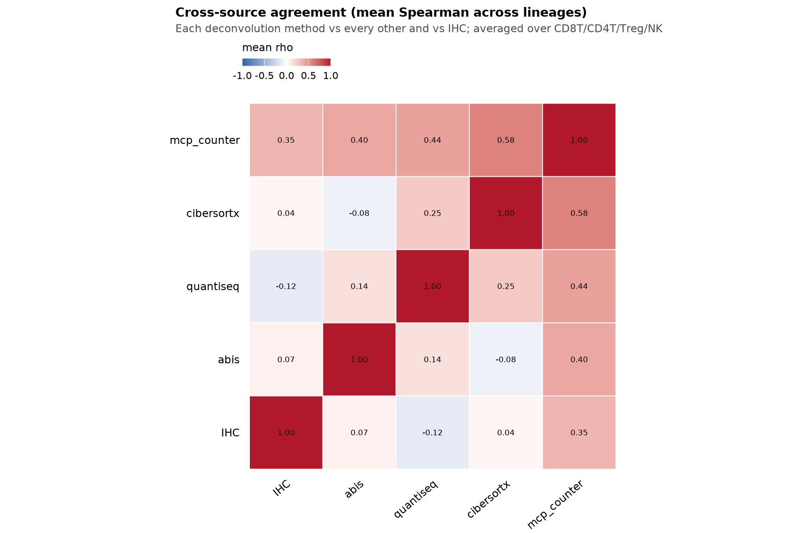
| Version | Author | Date |
|---|---|---|
| 3c2d0ad | sceriff0 | 2026-09-30 |
Per source:
mean_rho_vs_others(a) = average of mean_rho(a, b) over all other sources b
rho_vs_IHC(a) = mean_rho(a, IHC)mean_rho_vs_others is agreement with the consensus of
the others; rho_vs_IHC is agreement with IHC alone. A high
vs-others but low vs-IHC source (or the reverse) localises where methods
and IHC diverge.
if (!is.null(agr) && nrow(agr) > 0) {
# How much each source agrees with the consensus of the OTHERS (mean off-diagonal),
# and separately with IHC alone.
vs_ihc <- agr |> filter(b == "IHC", a != "IHC") |> select(source = a, rho_vs_IHC = mean_rho)
agr |>
filter(a != b) |>
group_by(source = a) |>
summarise(mean_rho_vs_others = mean(mean_rho, na.rm = TRUE), .groups = "drop") |>
left_join(vs_ihc, by = "source") |>
arrange(desc(mean_rho_vs_others)) |>
knitr::kable(digits = 3,
caption = "Per-source agreement with the other sources vs with IHC alone. A high vs-others but low vs-IHC source (or the reverse) flags where methods and IHC diverge.")
}| source | mean_rho_vs_others | rho_vs_IHC |
|---|---|---|
| mcp_counter | 0.442 | 0.345 |
| cibersortx | 0.197 | 0.042 |
| quantiseq | 0.177 | -0.120 |
| abis | 0.134 | 0.071 |
| IHC | 0.085 | NA |
deconv_to_lineage returns NA for those and
they are dropped (part 1 above does a marker-level CD163/CD14 check
instead).NA rather than a spurious correlation, and mean_rho
averages over the finite lineages only. With this cohort’s size the
agreement matrix is descriptive — read it for pattern, not
significance.CIBERSORT.R yet — check the status table’s row for it the
first time it runs.EXPR_SCALE (TPM when
gene lengths exist, else DESeq2-normalised); part 1’s per-scale rho
table shows how much the marker-level ranking depends on that choice.
CIBERSORTx is read back from data/cibersortx/output/ and is
only as current as the last container run.Neither bulk readout above is spatial, and “hot” is a spatial claim:
the clinical immuno-phenotype is a statement about where the immune
cells are, not just how many there are. This part tests it directly — a
physical band around the pathologist polygon, the CD45+ fraction and
density inside it, and those against HOT score and
Immuno-phenotype.
This is the only part that needs real geometry (a distance band
cannot come from a binary in-annotation flag), so it keeps
sf and is gated on the geojson tree being present; parts 1
and 2 run without it.
Inputs: ihc_data (whole-slide FlowPath cells, one copy
per patient, with centroid_x/centroid_y in
microns), the pathologist annotation
geojson polygons (in pixels), and the
clinical HOT score / Immuno-phenotype.
Unlike the inside-the-annotation checks, membership here needs real
geometry (a distance band cannot come from the binary
Out_of_annotation flag), so this report keeps
sf. Cells are placed in the polygon pixel frame by a
fixed conversion:
x_px = centroid_x / 0.325
y_px = centroid_y / 0.325 (0.325 microns per pixel)So 1 pixel = 0.325 microns, which gives the two conversions used below:
threshold d microns -> d / 0.325 pixels
pixel area A -> A * 0.325^2 / 1e6 square millimetresFor a core polygon P (the union of a patient’s annotations, or each
single annotation) and a half-width d microns, with
d_px = d / 0.325:
margin band = (P grown by d_px) minus (P shrunk by d_px)
deep core = P shrunk by d_px(grow/shrink are st_buffer by +/- d_px;
margin_regions.) If d_px exceeds the core’s
inradius the shrunk core is empty, and the margin band falls back to the
full grown buffer. Thresholds analysed: d = 50, 100, 200
microns. These are narrower than the 500 µm consensus-Immunoscore
half-width on purpose: at 500 µm the grown buffer swallows most of a
small annotation and the “margin” stops being a margin, so the band is
read at widths where it still isolates the boundary. The widest,
D_MAIN, is the one every single-threshold panel below
uses.
THRESHOLDS_UM <- c(50, 100, 200)
UM_PER_PX <- 0.325
# The headline width, derived rather than repeated. Every panel that shows one
# threshold reads D_MAIN, so changing THRESHOLDS_UM moves them all together — the
# previous version spelled `500` into eight filters and four captions, which is four
# captions that can disagree with the data they label.
D_MAIN <- max(THRESHOLDS_UM)
# arm_annotations() returns NULL when there is no geojson tree at all. This part is
# the only one of the three that needs real polygon geometry, so the absence is
# recorded as a flag and every chunk below carries `eval = have_margin`. Letting the
# first filter() hit a NULL frame instead would take parts 1 and 2 down with it, and
# those read bulk RNA and whole-slide cells — nothing to do with the annotations.
# The polygons come from the SAME arm as the cells: the arms' regions are drawn
# independently, so an invasive margin measured from one arm's boundary against
# another arm's cells would be a distance to a line those cells were never scored on.
annots <- arm_annotations(arm_spec(ARM), "region", patient_ids = neoplastic$SAMPLE)
# ALSO require the arm's cells: a margin band is a distance from a polygon to a
# CELL, so polygons alone are not enough. Without this, an arm with readable
# geojson but no csv would pass the gate and fail inside ihc_periphery_metrics().
have_margin <- have_arm && !is.null(annots) && nrow(annots) > 0
if (!have_margin)
cat("No pathologist geojson for arm", ARM, "under",
arm_annotation_dir(ARM), "- the invasive-margin section is skipped.\n")
if (have_margin) {
peri_union <- ihc_periphery_metrics(ihc_data, annots, scope = "union",
thresholds_um = THRESHOLDS_UM, um_per_px = UM_PER_PX)
peri_per_ann <- ihc_periphery_metrics(ihc_data, annots, scope = "per_annotation",
thresholds_um = THRESHOLDS_UM, um_per_px = UM_PER_PX)
cat("union rows:", nrow(peri_union),
"| patients:", dplyr::n_distinct(peri_union$patient_id),
"| per-annotation rows:", nrow(peri_per_ann), "\n")
}union rows: 30 | patients: 5 | per-annotation rows: 66 For the cells inside a region (st_within),
region_ratios_area() returns the membership counts (as in
clinical_flowpath.Rmd) plus:
area_mm2 = region pixel area * 0.325^2 / 1e6
dens_all_per_mm2 = n_inside / area_mm2
dens_cd45_per_mm2 = n_cd45_inside / area_mm2
dens_<lineage>_per_mm2 = n_<lineage> / area_mm2 (CD8T, CD4T, Treg, NK)
cd45_over_inside = n_cd45_inside / n_insideDensities are NA when the region is empty.
| patient_id | region | source | um_per_unit | area_mm2 | n_inside | n_cd45_inside | cd45_over_inside |
|---|---|---|---|---|---|---|---|
| 046 | core | sf:um2px(/0.325) | 0.325 | 36.678 | 312648 | 105834 | 0.339 |
| 046 | margin | sf:um2px(/0.325) | 0.325 | 16.739 | 9657 | 517 | 0.054 |
| 052 | core | sf:um2px(/0.325) | 0.325 | 33.050 | 267095 | 128571 | 0.481 |
| 052 | margin | sf:um2px(/0.325) | 0.325 | 14.634 | 23988 | 8887 | 0.370 |
| 10338 | core | sf:um2px(/0.325) | 0.325 | 17.403 | 114565 | 17985 | 0.157 |
| 10338 | margin | sf:um2px(/0.325) | 0.325 | 8.264 | 4223 | 803 | 0.190 |
| 15897 | core | sf:um2px(/0.325) | 0.325 | 19.550 | 178619 | 50178 | 0.281 |
| 15897 | margin | sf:um2px(/0.325) | 0.325 | 10.692 | 13172 | 2920 | 0.222 |
| 5456 | core | sf:um2px(/0.325) | 0.325 | 21.144 | 236564 | 126854 | 0.536 |
| 5456 | margin | sf:um2px(/0.325) | 0.325 | 14.816 | 23536 | 9829 | 0.418 |
Statistic: Spearman correlation (per threshold) between the
margin-band value and the numeric HOT score, for both:
fraction = cd45_over_inside = n_cd45_inside / n_inside
density = dens_cd45_per_mm2 = n_cd45_inside / area_mm2margin_union <- peri_union |>
filter(region == "margin") |>
inner_join(clin, by = "patient_id")
cat("patients with margin metrics + clinical immune phenotype:",
dplyr::n_distinct(margin_union$patient_id), "\n")patients with margin metrics + clinical immune phenotype: 5 df <- margin_union |>
filter(is.finite(cd45_over_inside), is.finite(hot_score))
if (nrow(df) > 2) {
labs_tbl <- df |>
group_by(threshold_um) |>
group_modify(~ paired_spearman(.x$cd45_over_inside, .x$hot_score)) |>
mutate(lab = sprintf("rho = %.2f\np = %.3g (n = %d)", rho, p, n))
# Coloured by the categorical immuno-phenotype while the axis is the continuous
# HOT score: the two are separate clinical columns, and seeing them together is
# the point — a cold-labelled case sitting high on the score axis is a
# disagreement inside the clinical record, not in the imaging.
df <- df |> mutate(immuno_phe = hotcold_order(immuno_phe))
ggplot(df, aes(cd45_over_inside, hot_score)) +
geom_smooth(method = "lm", se = FALSE, colour = FIT_LINE, formula = y ~ x) +
geom_point(aes(colour = immuno_phe), alpha = 0.85, size = 2) +
geom_text(data = labs_tbl, aes(x = -Inf, y = Inf, label = lab),
hjust = -0.05, vjust = 1.2, inherit.aes = FALSE, size = 3) +
facet_wrap(~ threshold_um, labeller = labeller(threshold_um = ~ paste0("d = ", .x, " µm"))) +
scale_colour_manual(values = hotcold_cols(levels(df$immuno_phe)),
na.value = "grey70", name = "Immuno-phenotype") +
labs(title = "Invasive-margin immune fraction vs clinical HOT score",
x = "CD45+ fraction in margin band (unitless, 0-1)",
y = "Clinical HOT score (unitless)")
}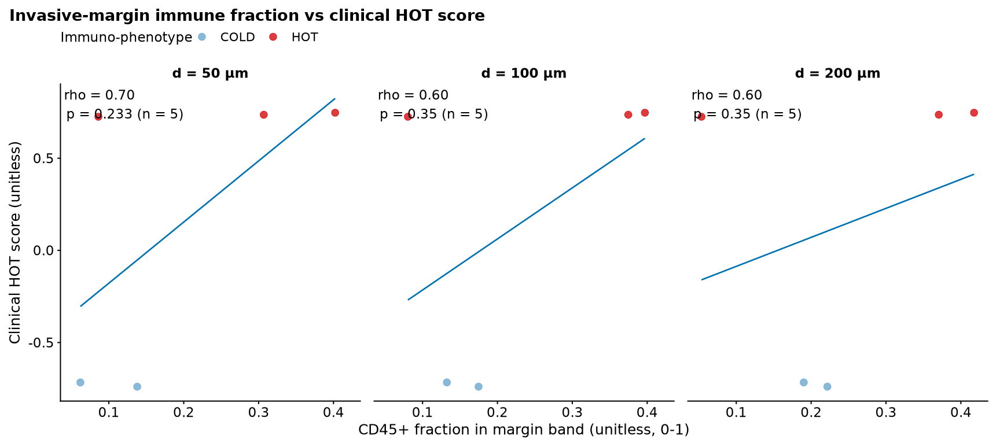
| Version | Author | Date |
|---|---|---|
| f1342a0 | sceriff0 | 2026-08-27 |
df <- margin_union |>
filter(is.finite(dens_cd45_per_mm2), is.finite(hot_score))
if (nrow(df) > 2) {
labs_tbl <- df |>
group_by(threshold_um) |>
group_modify(~ paired_spearman(.x$dens_cd45_per_mm2, .x$hot_score)) |>
mutate(lab = sprintf("rho = %.2f\np = %.3g (n = %d)", rho, p, n))
# Coloured by the categorical immuno-phenotype while the axis is the continuous
# HOT score: the two are separate clinical columns, and seeing them together is
# the point — a cold-labelled case sitting high on the score axis is a
# disagreement inside the clinical record, not in the imaging.
df <- df |> mutate(immuno_phe = hotcold_order(immuno_phe))
ggplot(df, aes(dens_cd45_per_mm2, hot_score)) +
geom_smooth(method = "lm", se = FALSE, colour = FIT_LINE, formula = y ~ x) +
geom_point(aes(colour = immuno_phe), alpha = 0.85, size = 2) +
geom_text(data = labs_tbl, aes(x = -Inf, y = Inf, label = lab),
hjust = -0.05, vjust = 1.2, inherit.aes = FALSE, size = 3) +
facet_wrap(~ threshold_um, labeller = labeller(threshold_um = ~ paste0("d = ", .x, " µm"))) +
scale_colour_manual(values = hotcold_cols(levels(df$immuno_phe)),
na.value = "grey70", name = "Immuno-phenotype") +
labs(title = "Invasive-margin immune density vs clinical HOT score",
x = "CD45+ density in margin band (cells/mm²)",
y = "Clinical HOT score (unitless)")
}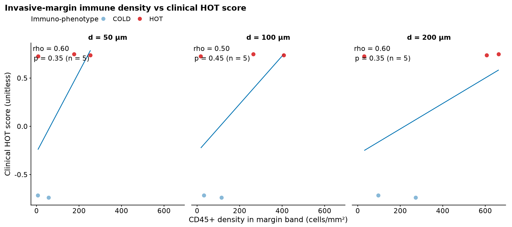
| Version | Author | Date |
|---|---|---|
| f1342a0 | sceriff0 | 2026-08-27 |
Distribution of the margin-band cd45_over_inside within
each Immuno-phenotype group (ordered cold ->
intermediate -> hot), faceted by threshold.
df <- margin_union |>
filter(!is.na(immuno_phe), is.finite(cd45_over_inside)) |>
mutate(immuno_phe = hotcold_order(immuno_phe))
if (dplyr::n_distinct(na.omit(df$immuno_phe)) > 1 && nrow(df) > 3) {
ggplot(df, aes(immuno_phe, cd45_over_inside, colour = immuno_phe)) +
geom_boxplot(outlier.shape = NA) +
geom_jitter(width = 0.2, alpha = 0.6) +
facet_wrap(~ threshold_um, labeller = labeller(threshold_um = ~ paste0("d = ", .x, " µm"))) +
scale_colour_manual(values = hotcold_cols(levels(df$immuno_phe)),
name = "Immuno-phenotype") +
labs(title = "Invasive-margin immune fraction by clinical immuno-phenotype",
x = NULL, y = "CD45+ fraction in margin band") +
theme(axis.text.x = element_text(angle = 30, hjust = 1))
}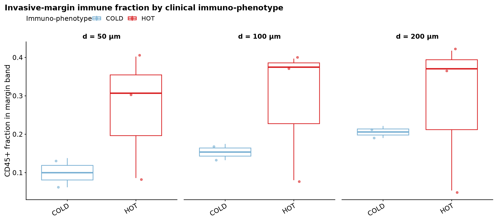
| Version | Author | Date |
|---|---|---|
| f1342a0 | sceriff0 | 2026-08-27 |
Per patient at the widest band, d = D_MAIN (200)
microns:
exclusion_frac = cd45_over_inside (margin) - cd45_over_inside (core)
exclusion_dens = dens_cd45_per_mm2 (margin) - dens_cd45_per_mm2 (core)Positive means immunity is concentrated at the border.
mc <- peri_union |>
filter(threshold_um == D_MAIN) |>
select(patient_id, region, cd45_over_inside,
dens_cd45_per_mm2, dens_CD8T_per_mm2, n_inside) |>
pivot_wider(names_from = region,
values_from = c(cd45_over_inside, dens_cd45_per_mm2, dens_CD8T_per_mm2, n_inside)) |>
mutate(
exclusion_frac = cd45_over_inside_margin - cd45_over_inside_core,
exclusion_dens = dens_cd45_per_mm2_margin - dens_cd45_per_mm2_core
) |>
inner_join(clin, by = "patient_id")
mc |>
select(patient_id, immuno_phe,
margin_cd45 = cd45_over_inside_margin, core_cd45 = cd45_over_inside_core,
exclusion_frac, hot_score) |>
arrange(desc(exclusion_frac)) |>
knitr::kable(digits = 3,
caption = paste0("Margin-vs-core CD45+ fraction at d = ", D_MAIN,
" µm. Positive exclusion_frac ⇒ border-concentrated immunity."))| patient_id | immuno_phe | margin_cd45 | core_cd45 | exclusion_frac | hot_score |
|---|---|---|---|---|---|
| 10338 | COLD | 0.190 | 0.157 | 0.033 | -0.717 |
| 15897 | COLD | 0.222 | 0.281 | -0.059 | -0.739 |
| 052 | HOT | 0.370 | 0.481 | -0.111 | 0.736 |
| 5456 | HOT | 0.418 | 0.536 | -0.119 | 0.747 |
| 046 | HOT | 0.054 | 0.339 | -0.285 | 0.725 |
sc <- mc |> filter(is.finite(cd45_over_inside_margin), is.finite(cd45_over_inside_core))
if (nrow(sc) > 1) {
aes_col <- if ("immuno_phe" %in% names(sc) && any(!is.na(sc$immuno_phe)))
aes(cd45_over_inside_core, cd45_over_inside_margin, colour = hotcold_order(immuno_phe))
else aes(cd45_over_inside_core, cd45_over_inside_margin)
p <- ggplot(sc, aes_col) +
geom_abline(slope = 1, linetype = "dashed", colour = "grey50") +
geom_point(size = 3, alpha = 0.85) +
coord_equal() +
labs(title = paste0("Margin vs core CD45+ fraction (d = ", D_MAIN, " µm)"),
x = "CD45+ fraction, deep core", y = "CD45+ fraction, invasive margin",
colour = "Immuno-phenotype")
if ("colour" %in% names(sc) || any(!is.na(sc$immuno_phe)))
p <- p + scale_colour_manual(values = hotcold_cols(levels(hotcold_order(sc$immuno_phe))),
name = "Immuno-phenotype", na.value = "grey70")
print(p)
}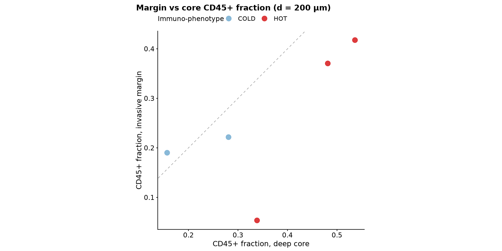
| Version | Author | Date |
|---|---|---|
| f1342a0 | sceriff0 | 2026-08-27 |
df <- mc |>
filter(!is.na(immuno_phe), is.finite(exclusion_frac)) |>
mutate(immuno_phe = hotcold_order(immuno_phe))
if (dplyr::n_distinct(na.omit(df$immuno_phe)) > 1 && nrow(df) > 3) {
ggplot(df, aes(immuno_phe, exclusion_frac, colour = immuno_phe)) +
geom_hline(yintercept = 0, linetype = "dashed", colour = "grey50") +
geom_boxplot(outlier.shape = NA) +
geom_jitter(width = 0.2, alpha = 0.6) +
scale_colour_manual(values = hotcold_cols(levels(df$immuno_phe)), name = "Immuno-phenotype") +
labs(title = paste0("Margin-minus-core exclusion score by clinical phenotype (d = ", D_MAIN, " µm)"),
x = NULL, y = "Exclusion score: margin − core CD45+ fraction (unitless)") +
theme(axis.text.x = element_text(angle = 30, hjust = 1))
}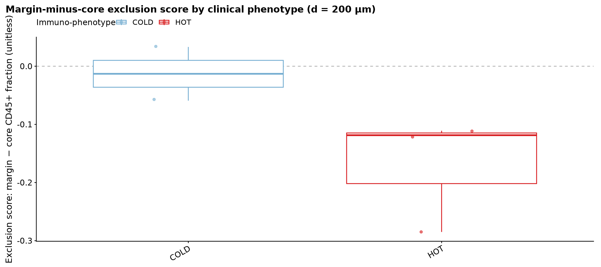
| Version | Author | Date |
|---|---|---|
| f1342a0 | sceriff0 | 2026-08-27 |
Per-annotation margin fraction (each single-annotation core) vs the
patient’s union margin fraction, at d = D_MAIN (200)
microns — a stability check across a patient’s separately drawn
regions.
pa <- peri_per_ann |>
filter(region == "margin", threshold_um == D_MAIN) |>
select(patient_id, annotation, cd45_over_inside)
un <- peri_union |>
filter(region == "margin", threshold_um == D_MAIN) |>
select(patient_id, union_cd45 = cd45_over_inside)
cmp <- inner_join(pa, un, by = "patient_id") |>
filter(is.finite(cd45_over_inside), is.finite(union_cd45))
if (nrow(cmp) > 1) {
ggplot(cmp, aes(patient_id, cd45_over_inside)) +
geom_line(aes(y = union_cd45, group = 1), colour = "grey60") +
geom_point(aes(y = union_cd45), colour = "grey40", size = 3, shape = 18) +
geom_jitter(aes(colour = annotation), width = 0.05, size = 2, alpha = 0.85) +
labs(title = paste0("Margin immune fraction: single annotations vs union (d = ", D_MAIN, " µm)"),
x = "Patient", y = "CD45+ fraction in margin band (unitless, 0-1)",
colour = "Annotation") +
theme(axis.text.x = element_text(angle = 30, hjust = 1))
}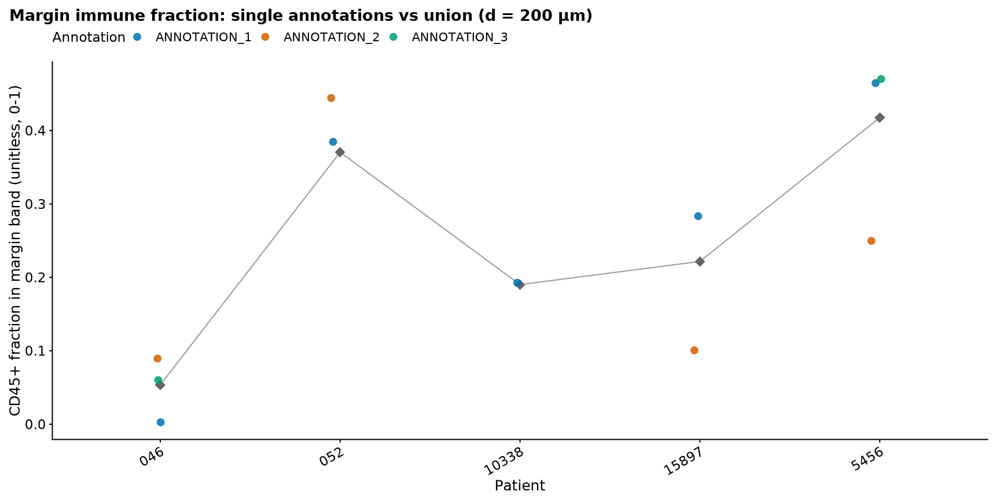
| Version | Author | Date |
|---|---|---|
| f1342a0 | sceriff0 | 2026-08-27 |
The same three-denominator composition used inside the tumour,
applied to the margin band at d = D_MAIN (200) microns:
frac_inside = n_<lineage> / n_inside (of all cells in band)
frac_tumor = n_<lineage> / n_tumor_inside (of tumour cells in band)
frac_cd45 = n_<lineage> / n_cd45_inside (of CD45+ cells in band)comp <- peri_union |>
filter(region == "margin", threshold_um == D_MAIN) |>
region_composition() |>
pivot_longer(c(frac_inside, frac_tumor, frac_cd45),
names_to = "normalization", values_to = "frac") |>
mutate(normalization = factor(
c(frac_inside = "of all cells", frac_tumor = "of tumour cells",
frac_cd45 = "of CD45+ cells")[normalization],
levels = c("of all cells", "of tumour cells", "of CD45+ cells"))) |>
filter(is.finite(frac))
if (nrow(comp) > 0) {
ggplot(comp, aes(lineage, frac, fill = lineage)) +
geom_boxplot(outlier.shape = NA, colour = "grey30") +
geom_jitter(width = .15, alpha = .5, size = 1) +
# One shared y across the three denominators: all three are fractions on 0..1
# and only the denominator changes, so the size of the gap between them is the
# finding. A free y per panel drew all three at the same apparent height.
facet_wrap(~ normalization) +
# Named lineage palette, not positional `oi` — see the note on the same plot
# in clinical_flowpath.Rmd. These are the same populations as that figure and
# must therefore be the same colours.
scale_fill_lineage(guide = "none") +
labs(title = paste0("Immune composition in the invasive-margin band (d = ", D_MAIN, " µm)"),
subtitle = with_n(NULL, comp$patient_id, "patients"),
x = NULL, y = "Cell fraction (unitless, 0-1)") +
theme(axis.text.x = element_text(angle = 30, hjust = 1))
}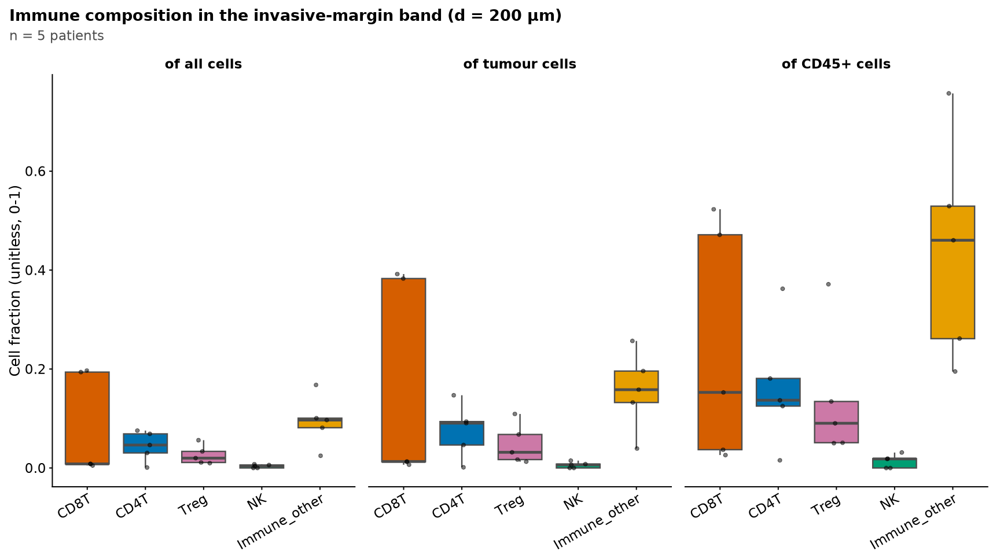
Same margin-band composition (d = D_MAIN = 200 µm, union), now split
by the clinical Immuno-phenotype: for each lineage, the
boxes contrast hot vs cold
tumours.
group(patient) = hot / intermediate / cold (from clinical Immuno-phenotype)
compared per lineage and per denominator (of all cells / tumour cells / CD45+ cells)comp_hc <- peri_union |>
filter(region == "margin", threshold_um == D_MAIN) |>
region_composition() |>
inner_join(clin, by = "patient_id") |>
filter(!is.na(immuno_phe)) |>
mutate(immuno_phe = hotcold_order(immuno_phe)) |> # cold -> intermediate -> hot
pivot_longer(c(frac_inside, frac_tumor, frac_cd45),
names_to = "normalization", values_to = "frac") |>
mutate(normalization = factor(
c(frac_inside = "of all cells", frac_tumor = "of tumour cells",
frac_cd45 = "of CD45+ cells")[normalization],
levels = c("of all cells", "of tumour cells", "of CD45+ cells"))) |>
filter(is.finite(frac))
if (nrow(comp_hc) > 0 && dplyr::n_distinct(na.omit(comp_hc$immuno_phe)) > 1) {
ggplot(comp_hc, aes(lineage, frac, colour = immuno_phe)) +
geom_boxplot(outlier.shape = NA, position = position_dodge(width = .75)) +
geom_point(position = position_jitterdodge(jitter.width = .12, dodge.width = .75),
alpha = .6, size = 1) +
# One shared y across the three denominators: all three are fractions on 0..1
# and only the denominator changes, so the size of the gap between them is the
# finding. A free y per panel drew all three at the same apparent height.
facet_wrap(~ normalization) +
scale_colour_manual(values = hotcold_cols(levels(comp_hc$immuno_phe)),
name = "Immuno-phenotype") + # hot = red, cold = light blue
labs(title = paste0("Invasive-margin cell-type fractions: hot vs cold (d = ", D_MAIN, " µm)"),
subtitle = sprintf("%d patients with a margin band and an immuno-phenotype",
dplyr::n_distinct(comp_hc$patient_id)),
x = NULL, y = "Cell fraction in margin band (unitless, 0-1)") +
theme(axis.text.x = element_text(angle = 30, hjust = 1))
}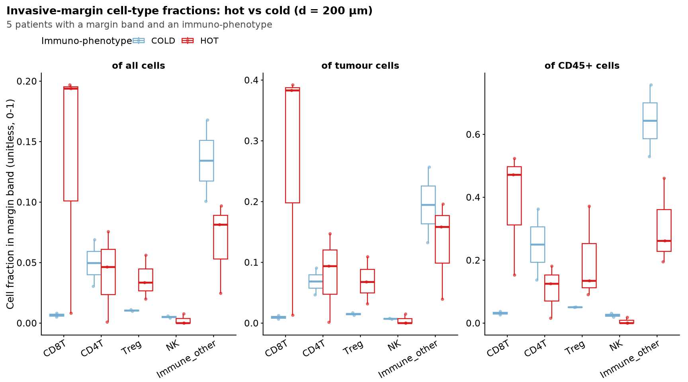
d / 0.325 pixel units; the um_per_unit column
echoes the 0.325 µm/px conversion used.Out_of_annotation fallback).n throughout.
sessionInfo()R version 4.3.2 (2023-10-31)
Platform: x86_64-pc-linux-gnu (64-bit)
Running under: Rocky Linux 9.5 (Blue Onyx)
Matrix products: default
BLAS/LAPACK: FlexiBLAS OPENBLAS; LAPACK version 3.11.0
locale:
[1] LC_CTYPE=C.UTF-8 LC_NUMERIC=C LC_TIME=C.UTF-8
[4] LC_COLLATE=C.UTF-8 LC_MONETARY=C.UTF-8 LC_MESSAGES=C.UTF-8
[7] LC_PAPER=C.UTF-8 LC_NAME=C LC_ADDRESS=C
[10] LC_TELEPHONE=C LC_MEASUREMENT=C.UTF-8 LC_IDENTIFICATION=C
time zone: Europe/Rome
tzcode source: system (glibc)
attached base packages:
[1] stats4 stats graphics grDevices datasets utils methods
[8] base
other attached packages:
[1] data.table_1.18.4 fs_2.1.0
[3] readxl_1.5.0 DESeq2_1.42.1
[5] SummarizedExperiment_1.32.0 Biobase_2.62.0
[7] MatrixGenerics_1.14.0 matrixStats_1.5.0
[9] GenomicRanges_1.54.1 GenomeInfoDb_1.38.8
[11] IRanges_2.36.0 S4Vectors_0.40.2
[13] BiocGenerics_0.48.1 sf_1.1-2
[15] here_1.0.2 forcats_1.0.1
[17] stringr_1.6.0 ggplot2_4.0.3
[19] purrr_1.2.2 readr_2.2.0
[21] tidyr_1.3.2 tibble_3.3.1
[23] dplyr_1.2.1 workflowr_1.7.2
loaded via a namespace (and not attached):
[1] splines_4.3.2 later_1.4.8
[3] bitops_1.1-0 filelock_1.0.3
[5] cellranger_1.1.0 preprocessCore_1.62.1
[7] graph_1.78.0 XML_3.99-0.24
[9] lifecycle_1.0.5 edgeR_3.42.4
[11] rprojroot_2.1.1 vroom_1.7.1
[13] processx_3.9.0 lattice_0.23-1
[15] MASS_7.3-60.0.1 magrittr_2.0.5
[17] limma_3.56.2 sass_0.4.10
[19] rmarkdown_2.31 jquerylib_0.1.4
[21] yaml_2.3.12 httpuv_1.6.12
[23] otel_0.2.0 DBI_1.3.0
[25] RColorBrewer_1.1-3 abind_1.4-8
[27] zlibbioc_1.48.2 quadprog_1.5-8
[29] RCurl_1.98-1.20 pracma_2.4.6
[31] rappdirs_0.3.3 git2r_0.33.0
[33] sva_3.50.0 GenomeInfoDbData_1.2.11
[35] data.tree_1.2.0 irlba_2.3.7
[37] genefilter_1.82.1 GSVA_1.48.3
[39] units_1.0-1 xCell_1.1.0
[41] annotate_1.78.0 MCPcounter_1.2.0
[43] DelayedMatrixStats_1.22.6 codetools_0.2-20
[45] DelayedArray_0.28.0 xml2_1.6.0
[47] tidyselect_1.2.1 farver_2.1.2
[49] ScaledMatrix_1.8.1 EPIC_1.1.7
[51] BiocFileCache_2.8.0 jsonlite_2.0.0
[53] e1071_1.7-17 survival_3.8-11
[55] quantiseqr_1.8.0 tools_4.3.2
[57] progress_1.2.3 Rcpp_1.1.1-1.1
[59] glue_1.8.1 SparseArray_1.2.4
[61] xfun_0.58 mgcv_1.9-1
[63] HDF5Array_1.28.1 withr_3.0.3
[65] ComICS_1.0.4 BiocManager_1.30.27
[67] fastmap_1.2.0 rhdf5filters_1.12.1
[69] rsvd_1.0.5 callr_3.7.6
[71] digest_0.6.39 R6_2.6.1
[73] lpSolve_5.6.23 biomaRt_2.56.1
[75] mMCPcounter_1.1.0 RSQLite_3.53.3
[77] generics_0.1.4 renv_1.2.3
[79] class_7.3-24 prettyunits_1.2.0
[81] httr_1.4.7 S4Arrays_1.2.1
[83] whisker_0.4.1 pkgconfig_2.0.3
[85] gtable_0.3.6 blob_1.3.0
[87] S7_0.2.2 SingleCellExperiment_1.22.0
[89] XVector_0.42.0 htmltools_0.5.9
[91] GSEABase_1.62.0 scales_1.4.0
[93] png_0.1-9 knitr_1.51
[95] rstudioapi_0.15.0 tzdb_0.5.0
[97] nlme_3.1-171 curl_7.1.0
[99] proxy_0.4-29 cachem_1.1.0
[101] rhdf5_2.44.0 testit_1.1
[103] immunedeconv_2.1.4 KernSmooth_2.23-27
[105] parallel_4.3.2 AnnotationDbi_1.62.2
[107] pillar_1.11.1 grid_4.3.2
[109] vctrs_0.7.3 promises_1.5.0
[111] BiocSingular_1.16.0 dbplyr_2.6.0
[113] beachmat_2.16.0 xtable_1.8-8
[115] evaluate_1.0.5 cli_3.6.6
[117] locfit_1.5-9.12 compiler_4.3.2
[119] rlang_1.3.0 crayon_1.5.3
[121] labeling_0.4.3 classInt_0.4-11
[123] ps_1.9.3 getPass_0.2-4
[125] stringi_1.8.7 BiocParallel_1.36.0
[127] Biostrings_2.68.1 limSolve_2.0.3
[129] Matrix_1.6-5 hms_1.1.4
[131] sparseMatrixStats_1.12.2 bit64_4.8.6
[133] Rhdf5lib_1.22.1 KEGGREST_1.40.1
[135] memoise_2.0.1 bslib_0.9.0
[137] bit_4.6.0